המוזיאון של Open Studio
מסע הרעיון, מחקר על מוזיאונים ועל אדריכלות דיגיטלית, והטכנולוגיה שלנו: ובסוף חמישה רעיונות לבניין אחד, עם תוכניות, חתכים ותמונות מכמה זוויות, השוואה והמלצה.
נכתב ב־16.11.2026, לאלעד אמסלם. הציורים והפסלים בתמונות הם מהאוסף של האפליקציה; הבניינים בתמונות הם מודלי סקיצה בתלת-ממד שנבנו כדי לבחור, ולא העיצוב הסופי. מידות הבניינים הן להמחשה.
מה במסמך
- חלק א׳: המסע של הרעיון: מה אמרת, מה נבנה, מה נדחה ולמה.
- חלק ב׳: איך מוזיאונים נבנים: איך אדריכלים חושבים, מוזיאונים מפורסמים, חוויית המבקר.
- חלק ג׳: אדריכלות דיגיטלית והטכנולוגיה שלנו: מה בניין וירטואלי יכול, איפה אנחנו היום, איך מעלים את הריאליזם בטלפון.
- חלק ד׳: חמישה רעיונות לבניין, השוואה והמלצה.
- נספחים: שש הסקיצות הראשונות, מה אומת ומה לא.
חלק א׳: המסע של הרעיון
החלק הזה הוא מראה: מה ביקשת, מה החלטת ומה דחית בנוגע למוזיאון, מההתחלה ועד 16.11.2026, ומה נבנה בכל פעם ולמה זה שונה.
המקורות: תמלילי הסשנים (בעיקר סשן הלידר וסשן המוזיאון), קובצי הריפו, ו־git log. כל השעות בשעון ישראל.
ההקלדה הקולית מעוותת חלק מהמילים. כל מקום שבו פירשתי מילה או כוונה בהשערה מסומן לא מאומת.
ציר זמן
שלב 0: לפני המוזיאון (2 עד 7.11)
ב־2.11 נולדו התערוכות הווירטואליות, חדרים שקיימים רק ב־Open Studio. ב־3.11 נבנו ב־Blender עשרה סוגי חדרים. בבקשה מ־3.11 כתבת שאתה רוצה "דיוק ושיפור לרמה הכי גבוהה של אור", ואחרי שראית את עשרת החדרים אמרת שהם עדיין "מאוד מאוד דיגיטליים".
בגלריה עם חלונות תתעכב על הנוף בחוץ שיראה ראליסטי. (3.11, 16:54)
זה תחילתו של חוט שחוזר עד היום: חוץ אמיתי, בעיקר דרך חלונות. ב־8.11 חזרת על כך ("החלון השקוף מראה טבע שטוח מדי"), ונוספו פדסטלים ועורך תלייה בתוך החדר. לא נמצאו תמלילים שלך על Open Studio מלפני 3.11.
שלב 1: המוזיאון עולה לראשונה (8 עד 9.11)
ב־8.11 ב־20:52, בתוך משימות ללילה, הופיע הרעיון לראשונה: עורך אחד (אתה), מבקר שמסתובב בחללים, עריכה במחשב או באייפד, ורשות מאמנים.
כמו מגזין כזה. זה אמור להיראות כמו מוזאון עם חללים שמסתובבים בו.
נבנה: הצעה של 14 עמודים עם שלושה כיוונים: "הגיליון", "הגיליון עם בניין" (המומלץ) ו"מוזיאון להליכה". ב־9.11 ב־21:50 כתבת שההצעה "מעולה להתחלה", וביקשת אפליקציה נפרדת למחשב ולאייפד בלבד: ככה נולד ה־Desk.
ב־9.11 ב־22:39 הגיעה המשימה ששינתה כיוון:
תחקור את המוזאונים הכי חדישים ומיוחדים שיש כרגע בעולם ותעצב מוזיאון וירטואלי חדש בהשראתם - מוזיאון שאפשר לטייל בו.
למה השתנה: המוזיאון הפסיק להיות מגזין והפך למרחב להליכה. ההצעה ל"גיליון" נשארה רק כבסיס לעורך. באותו לילה נבנו Desk ראשון (שבע עמודות, כולל "עורך כתבות" שהוסר אחר כך) והצעה אדריכלית של כ־30 עמודים: מחקר על 40 מוזיאונים ו־11 וירטואליים, וחמישה כיוונים (הרחוב, החלל, הגן והביתנים, הירידה, המחסן הפתוח). הסוכן המליץ על קמפוס של ביתנים בגן.
שלב 2: הרחוב (10 עד 11.11)
ב־10.11 ב־11:16 בחרת, בניגוד להמלצה:
הכי התחברתי לכיוון א׳ הרחוב: ציר אחד ארוך, והחדרים נפתחים ממנו.
ביקשת חלל סגור בלי חוץ, בלי מדרגות ובלי "טבע דיגיטלי". כבר אז הוספת: "זה מרגיש בנאלי מדי וישר מדי", ולכן ביקשת מעברים צבעוניים ויצירתיים יותר בין התערוכות. זה הגרעין של כל מה שבא אחר כך.
נבנה: PDF של "הרחוב, אבל בצבע" (בחרת "לפי ההמלצה"), ואחר כך מוזיאון חי: רחוב אחד, שישה חדרים, מפתנים צבעוניים ותקרה זוהרת. כשהסוכן עצמו אמר שהוא נראה פשוט ושטוח, ענית "כן, תשפר". ב־20:43 הגדרת את התפקיד:
אני בעצם כל פעם משנה רק את התערוכות, לא את המוזיאון עצמו. את המוזיאון אני עורך רק במחשב.
בלילה נבנה ה־Desk כעורך מוזיאון: שמונה חדרי רחוב, שיבוץ תערוכה לחדר, מתג "מוצגת למבקרים", ועורך תערוכה במסך מלא. עריכת המוזיאון הוסרה מהטלפון. ב־11.11 ב־06:48 עצרת את העבודה בגלל המכסה. עד 13.11 לא אמרת דבר על המוזיאון, וההשהיה לא הייתה החלטה תכנונית.
שלב 3: "לא רחוב אחד" (13 עד 14.11)
ב־13.11 ב־19:00 ביקשת שלושה דברים: שהמוזיאון יופיע ב־Home, שכל פרסום ב־Desk יתעדכן באפליקציה, ושהעיצוב יהיה אחר.
לא אהבתי שזה רחוב אחד עם חדרים... אולי חלל מרכזי שיהיו בו קוליסות ופדסטלים עם עבודות בודדות, וממנו יהיה אפשר להיכנס לחללים.
נבנה: ב־Home סקשן "The Museum" עם כפתור "Walk in", שנקרא מחדש בכל פתיחה, כך שפרסום ב־Desk מופיע בפתיחה הבאה. ב־14.11 הוצעו שלוש תוכניות: החצר (אולם מלבני מואר מלמעלה, המומלץ), הרוטונדה והביתן. הרחוב נשאר ברירת המחדל. ב־14.11 ב־21:59 נשאלת איזו תוכנית להפוך למוזיאון. בשום תמליל אין תשובה על כך. במקומה בא סיבוב חדש.
שלב 4: "יותר מדי סימטרי" (15.11)
ב־15.11 ב־16:11:
אנחנו בדרך הנכונה, אבל צריך לשנות את כל הנראות של המוזיאון: זה מאוד מאוד סימטרי וישר ומסודר לי מדי.
זה לא יכול להיות בנוי מלא חדרים, זה אמור להיות פתוח יותר.
חידושים בהודעה הזו: "אולי יורדים איזה מדרגות" (בניגוד ל־10.11), חלל עם זכוכית וחלל בטון, שלושה סוגי תוכן (תערוכות היסטוריות, תערוכות אמיתיות מהעולם עם סיור וירטואלי, ותערוכות וירטואליות של האפליקציה), ו"כל משתמש לפי אלגוריתם מסוים". ביקשת שלוש־ארבע הצעות שונות זו מזו.
נבנה: ארבע הצעות במודל תלת־ממדי, שהושלמו ב־16.11 ב־02:15 ונשלחו ב־PDF: השדה (המומלץ), הירידה, השביל והאשכול. במקביל נבנה ב־Home שער מתחת לכוכבים. לא נמצא תמליל שבו בחרת בו לא מאומת: מי בחר בשער.
שלב 5: ירידה, אשכול, חוץ והיסטוריה (16.11, בוקר)
ב־06:32 לחצת "הירידה", ודקה אחר כך כתבת "תתחיל עם האשכול". נבנה האשכול: נחיתה בחוץ על רחבת טרצו, שלושה קירות חופשיים, פדסטלים ושמונה בתים בגדלים וחומרים שונים. ב־06:53 אישרת "כן, להפוך", והאשכול הפך למוזיאון.
ב־06:55 ביקשת:
הבחוץ חייב להיות ראליסטי ממש מבחינת עצים, שמיים ותאורה... מהחלונות.
נבנו שמיים לפי השעה בטלפון, עצים, פנסי רחוב וחלונות בבתים. ב־07:19 הקלטת הודעה ארוכה: חלל מרכזי שממנו יוצאים לחללים, מרחבים פתוחים בין התערוכות, ובעיקר סקשן היסטוריה:
פתאום הליכה בהיסטוריה של הזמן.
ביקשת גרסה ראשונית של הרנסאנס, כולל פסלים (דוד) ודגמי אדריכלות קטנים, ושני סוכנים למוזיאון בלבד: אדריכל ואוצר. ב־07:21 הוספת: "אל תמחק שום תערוכה עכשיו". ב־07:29 קבעת שכותרת ה־Home תהיה באנגלית ונועזת יותר מ־The Museum.
נבנה (07:45): אגף הרנסאנס עם ארבעה חללים, 19 ציורים מנחלת הכלל, דוד, הפייטה, שלושה דגמי אדריכלות, שני קובצי תפקיד (ARCHITECT.md ו־CURATOR.md, לא סוכנים חיים), וכרטיס "Open All Night" ב־Home עם סרט של 34 שניות. את השם בחר הסוכן, לא אתה.
שלב 6: "זה לא הכיוון" (16.11, 09:21 עד היום)
ב־09:21 פתחת את האתר:
פתחתי את המוזיאון, וזה לא הכיוון. אני לא רוצה פוליסות בחוץ.
אבל ציורים לא נמצאים בפוליסות בחוץ, זה לא הגיוני. אז הכול כמו מוזיאון שהוא במבנה... אבל אנחנו מתחילים עם מבנה אחד.
ביקשת מבנה מרכזי עם קירות, קוליסות ופדסטלים בפנים ואור מחלונות, ומשם כניסה למבנים נוספים. ביקשת גם שהמפה בפינה תהיה לחיצה ותציג רשימת תערוכות עם קפיצה ישירה, כי טיול ברגל לוקח זמן. "פוליסות" כנראה "קוליסות" לא מאומת, והמשפט על הפדסטלים והאור מעוות בתמלול.
ב־09:25 עצרת את הבנייה וביקשת חמישה או שישה כיוונים ב־PDF, כאדריכל, אחרי מחקר מעמיק, ו"אז מתוכו נצא לעבודה בלילה ונבנה את המוזיאון מחדש". ב־09:30 הגדרת שהמוזיאון נערך רק ב־Desk, עם שלושה סוגי תערוכות: של המוזיאון, של אמן (שהאמן עורך בעצמו), והעתקה של תערוכת אמן למוזיאון. החיבור השלישי לא נבנה. ב־09:32 דחית מחקר של כמה דקות: "לא הגיוני... שעות של עבודה". בתגובה נבנו שישה דגמי סקיצה ראשונים (נספח א׳) ומהם חמשת הרעיונות בחלק ד׳. שום שינוי לא יפורסם במוזיאון החי עד שתבחר.
מה אלעד באמת רוצה: הרצונות העומדים
מדורג לפי כמה הם קשיחים וחוזרים.
דרגה 1: קשיחים וחוזרים
- מוזיאון אמיתי לאמנות, בבניין אחד שלם עם קירות וגג. מתחילים ממבנה אחד, ואחר כך אולי אגפים, מעבר בין מבנים ופטיו (16.11).
- ציורים רק על קירות, פסלים על פדסטלים, הכול בפנים.
- אור יום דרך חלונות בתקרה ובקיר אחד או שניים, וחוץ ראליסטי (עצים, שמיים) שנראה דרך החלונות ומסונכרן לשעה אצל המבקר.
- ריאליזם אמיתי ולא מראה "דיגיטלי": חומרים, אור, נוף.
- המוזיאון נערך רק במחשב, ב־Desk. אתה האוצר, ומה שאתה מפרסם מופיע באפליקציה.
- המבנה קבוע ויציב, והתערוכות מתחלפות. אפשר להוסיף חללים בלי "להוסיף חדרים".
- לא רחוב ארוך עם חדרים, לא סימטרי ומסודר מדי.
- להראות לך הצעות עם תמונות לפני בנייה גדולה, ולהחליט לפי מה שאתה רואה.
דרגה 2: חזון תוכן
- תערוכות היסטוריות, "הליכה בהיסטוריה של הזמן": רנסאנס, בארוק, ריאליזם ורומנטיקה, אימפרסיוניזם, קוביזם. מנחלת הכלל, עם קרדיטים.
- שלושה סוגי תוכן: היסטוריות, אמיתיות מהעולם עם סיור וירטואלי, ווירטואליות של האפליקציה. גם תערוכות יחיד.
- מרחב פתוח להליכה בין התערוכות, לא רק תערוכה אחת בכל חדר, וצבע ויצירתיות בין התערוכות.
- פסלים (דוד, פייטה) ודגמי אדריכלות קטנים, כמו מקטה של אדריכלים.
- ניווט: מפה לחיצה עם רשימת תערוכות וקפיצה ישירה.
- שני סוכנים למוזיאון בלבד: אדריכל ואוצר.
- חלל זכוכית וחלל בטון, אולי מדרגות ("אולי" בלבד).
דרגה 3: לעתיד או מורכב
- מסלול אישי לכל מבקר לפי אלגוריתם.
- שלושת החיבורים של תערוכות ב־Desk (לא נבנו).
- הסוכן שמדברים איתו בלוח הבקרה (חיבור מתוכנן לערב, כשהמחשב אצלך).
- הרשאה מאמנים לשימוש ביצירות שלהם (לא נבנתה).
- מעבר בין מבנים, פטיו ואגפים.
מה נדחה ולמה
| מה | מתי | למה |
|---|---|---|
| מגזין או גיליון כצורת המוזיאון | 9.11 | לא נאמר "דחיתי". אמרת "מעולה להתחלה" לעורך, ובאותו ערב ביקשת מוזיאון להליכה. |
| קמפוס וגן עם ביתנים (המלצת הסוכן) | 10.11 | "בלי טבע דיגיטלי", בלי להסתבך במדרגות, בינתיים סגור ובלי חוץ. |
| מדרגות וירידה | 10.11 נדחה; 15.11 "אולי"; 16.11 נבחר ואז הוחלף | מורכבות לשימוש. אחר כך הוזכרו כאפשרות. |
| רחוב אחד ארוך עם חדרים | 10.11 "בנאלי"; 13.11 | "לא אהבתי", למרות שהעריכה והמוזיאון "נראים טוב". |
| החצר (אולם סימטרי עם דלתות) | 15.11 | "סימטרי וישר ומסודר לי מדי", אבל "בדרך הנכונה". |
| בתים בשביל, חדרים בשמות אחרים | 15.11 | "לא יכול להיות בנוי מלא חדרים". |
| אשכול בתים בפארק וקירות חופשיים בחוץ | 16.11, 09:21 | "זה לא הכיוון", ציורים לא נמצאים בחוץ. |
| עריכת מוזיאון בטלפון | 10.11 | "רק במחשב". הוסרה מהטלפון. |
| הכותרת The Museum, הנוסח "Six exhibitions, one walk" ותצוגת "מיני רישום" ב־Home | 16.11 | רצית כותרת נועזת יותר וסרט ריאליסטי של החלל. |
| תערוכות שהסוכן המציא (כמו Celebration) | 16.11, 07:19 ואז 07:21 | בלבלו אותך. אחר כך ביקשת לא למחוק כלום, אלא להסתיר ולהחזיר. |
| מחקר של כמה דקות | 16.11, 09:32 | "לא הגיוני". ביקשת שעות. |
שאלות פתוחות וסתירות
שמונה השאלות החשובות ביותר. בכל אחת, הקריאה הסבירה אינה מאומתת עד שתענה.
- בפנים או בחוץ? ב־10.11 ביקשת "בלי חוץ", ב־16.11 ב־06:55 "הבחוץ חייב להיות ראליסטי", וב־09:21 "לא בחוץ". האם החוץ שרצית הוא רק מה שנראה מהחלונות, ולא פארק שהולכים בו? זו הקריאה הסבירה, כי כתבת "מהחלונות". לא מאומת
- מה זה "פוליסות"? הסשן תרגם ל"ציורים על פדסטלים בחוץ", אבל ציור לא עומד על פדסטל. האם התכוונת ל"קוליסות בחוץ", כך שקוליסות בפנים מקובלות (ביקשת אותן ב־13 וב־15.11)? לא מאומת
- ירידה או אשכול? לחצת על "הירידה" ודקה אחר כך כתבת "תתחיל עם האשכול". האם הלחיצה הראשונה הייתה טעות והאשכול הוא מה שרצית? לא מאומת
- "פתוח" מול "מבנה אחד". ב־15.11 ביקשת מרחב פתוח בלי חדרים, וב־16.11 מבנה מרכזי עם קירות. איך נראה "פתוח" בתוך בניין אחד: תוכנית חופשית, אטריום, קוליסות? זו שאלת התוכן של חמשת הרעיונות בחלק ד׳.
- ללכת או לקפוץ? אתה רוצה הליכה אמיתית, וגם קפיצה מרשימה כי ההליכה ארוכה. האם הרשימה היא קיצור בלבד, או חלק מהחוויה?
- מוזיאון אחד או אישי? "כל משתמש לפי אלגוריתם" (15.11) מול VISION.md, שמציין "אישי, בהמשך; עד אז אחד של העורך". האם בונים עכשיו מוזיאון אחד, ורק משאירים מקום לאישי? הקריאה הסבירה היא כן. לא מאומת
- שער ה־Home והשם. לא נמצא מי בחר באחת מארבע ההצעות לשער (15.11), ובהמשך קראת לו "מיני רישום". והשם "Open All Night" נבחר על ידי הסוכן ולא אושר. האם אתה מאשר את השם ואת השער?
- כפתור "למוזיאון". האם הכפתור בלוח הבקרה ישבץ תערוכה ישירות, או רק יפתח את ה־Desk? נשאל ב־16.11 ב־09:24 ולא נענה. קשור: העתקת תערוכת אמן למוזיאון עדיין לא נבנתה, ורישיון דוד (CC BY-SA) טרם אושר על ידך.
הסינתזה: מה אלעד באמת רוצה מהמוזיאון
- מקום ולא תפריט: בניין אחד אמיתי שמתהלכים בו, שמרגיש כמו מוזיאון לאמנות ולא כמו אפליקציה.
- הבניין קבוע ויציב, ורק התערוכות מתחלפות. אתה מחליט מה תלוי בלי לגעת בבניין.
- בלי סימטריה, ישרות ו"חדרים": חלל מרכזי חי עם קוליסות ופדסטלים של יצירות בודדות, ופתחים ליותר ממקום אחד.
- אור ואוויר אמיתיים: חלונות בתקרה ובקיר, שמיים ועצים ראליסטיים דרך החלונות, וסנכרון לשעה של המבקר.
- אמנות היסטורית אמיתית בלב: הליכה בזמן (רנסאנס, בארוק, אימפרסיוניזם, קוביזם), ציורים בגודל אמיתי, פסלים ומקטות אדריכלות.
- שלושה סוגי תערוכות יחד: היסטוריות, אמיתיות מהעולם עם סיור וירטואלי, ווירטואליות של האפליקציה ושל אמנים.
- חלל פתוח בין התערוכות, ולא רק תערוכה לכל חדר, עם צבע ויצירתיות בין התערוכות.
- אתה האוצר: עורך רק במחשב, מפרסם ורואה מיד באפליקציה, ובוחר מה נכנס. אמנים עורכים את שלהם בעצמם.
- מנגנונים לעתיד: סוכן אדריכל וסוכן אוצר, מסלול אישי לפי אלגוריתם, הרשאות מאמנים, והרחבה בלי "הוספת חדרים".
- ניווט פשוט בטלפון: מפה לחיצה ורשימת תערוכות שקופצת, כי טיול ברגל ארוך.
- אתה מחליט לפי מראה: מבקש הצעות עם תמונות, בוחר, רואה את הבנוי ומתקן (רחוב, אולם, אשכול, בניין). לכן צריך להראות לך מוקדם משהו ריאליסטי ולא רק תוכניות.
- מעל הכול: ריאליזם ומקצועיות ברמה הגבוהה ביותר, בלי "מראה דיגיטלי", ומוזיאון מיוחד ולא רגיל. לכן ביקשת מחקר אדריכלי של שעות ולא של דקות.
חלק ב׳: איך מוזיאונים נבנים, ולמה
החלק הזה עונה על שאלה אחת: מה אדריכלים יודעים על בניית מוזיאון, ומה אפשר ללמוד מהמוזיאונים המפורסמים ומהמחקר על מבקרים.
הוא מבוסס על מסמכי מחקר פנימיים, שבהם כל טענה סומנה כמאומתת בעמוד שנקרא או כלא מאומתת. כאן, מה שלא אומת מסומן לא מאומת.
המטרה אינה להעתיק מוזיאון קיים, אלא להבין אילו החלטות אדריכליות עומדות מאחורי כל אחד, כדי שנחליט את שלנו בעיניים פקוחות.
איך אדריכלים חושבים
מה לומדים בתואר
בדוח הערכה של המועצה להשכלה גבוהה מ־2022 על התוכנית באוניברסיטת תל אביב כתוב שהתואר בנוי משלוש שנות יסוד ואחריהן שנתיים של קורסי חובה ובחירה, חמש שנים בסך הכול. בטכניון נאמר שתואר שני מיועד למי שיש לו תואר ראשון מקצועי בן חמש שנים. בבצלאל, לפי אתר בית הספר, ״סטודיו התכנון המשולב״ הוא הרכיב שקושר את התוכנית כולה. בפוליטקניקו די מילאנו יש חמש שנים ו־12 מעבדות תכנון. התמונה הכללית: חמש עד שש שנים, וכמחצית מהזמן השבועי בסטודיו.
סביב הסטודיו עומדים תחומי תמיכה: היסטוריה ותאוריה, מבנים (איך עומסים מגיעים לקרקע, מפתחים ורשתות), טכנולוגיית בנייה, תאורה ואקלים, ייצוג (שרטוט ומודלים), אורבניזם ונוף, ועבודה מקצועית. דוח תל אביב מציין גם חולשה מוכרת: קשה לשמור על הבנה של מבנה ובנייה בתוך עבודת הסטודיו. לנו זה רלוונטי: המודול של המוזיאון צריך להיקבע יחד עם הסיפור, לא אחריו.
פרויקט סטודיו, צעד אחר צעד
המסמכים לא כוללים חוברת סטודיו של בית ספר אחד, ולכן הרצף הבא הוא סיכום של הדפוס הרגיל לא מאומת בפרטים:
- תוכנית פונקציונלית (brief). מי הלקוח, אילו חללים ובאילו שטחים, תקציב, אתר. הסטודנטים קודם כול חוקרים אותה ומחפשים בה סתירות.
- ניתוח אתר. מפות, שמש, רוח, גישה, נופים. אצלנו אין אתר, ולכן ״כוחות האתר״ הם הסיפור, הקהל והאור.
- לימוד תקדימים. משרטטים מחדש שלושה עד חמישה מבנים קיימים באותו קנה מידה.
- רעיון מארגן (parti). משפט אחד ושרטוט אחד.
- דיאגרמות. תנועה, אור, מבנה, ציבורי מול פרטי, כל אחת מבודדת.
- תוכניות, חתכים ומודלים. בחתך מכריעים על האור והגובה.
- ביקורת (crit). תולים שרטוטים, מורים ומבקרים מגיבים בעל פה. השאלה: האם הרעיון ברור והאם כל שרטוט תומך בו.
- פיתוח ופרטים. איך הקיר פוגש את הרצפה, איפה עומד מסגר פתח הגג.
- הגשה סופית. שרטוטים, מודל, לפעמים סרט.
אצלנו המקבילה לדגם בגודל מלא היא הטלפון: הולכים בו ובודקים.
איך אדריכל רואה
רעיון מארגן (parti). המונח בא מהצרפתית, ״החלטה שכבר התקבלה״, ומתאר את הרעיון המנחה של התכנון, בדרך כלל כדיאגרמה פשוטה או כמשפט. דוגמה לניסוח, וזו הצעה ולא עובדה: ״היכל ארוך ומואר שעוברים בו כמו בנהר, עם חדרי צד שנפתחים כמפרצים״. הרשימה שלך (היכל מרכזי, אגפים, היסטוריה, תערוכות יחיד וקבוצה, פיסול, דגמים, שטח הליכה פתוח, אור יום) היא רשימת תוכנית. הרעיון המארגן הוא מה שהופך אותה לבניין אחד ולא לערימה, או ל״רשת אינסופית של חדרים״ שכבר הוגדרה כדבר שלא רוצים.
סט השרטוטים. תוכנית היא חתך אופקי בגובה של כמטר וחמישית מעל הרצפה. חתך הוא חיתוך אנכי, ושם מתכננים את האור. חזית היא מבט שטוח על קיר חיצוני. אקסונומטריה היא שרטוט תלת־ממדי שאפשר למדוד בו ישירות, ובו השתמשו אדריכלי הבאוהאוס ודה סטייל בשנות העשרים. פרספקטיבה היא מה שהטלפון מראה, והכלל הוא שקווים אנכיים נשארים אנכיים. פרטים הם הצמתים הקטנים, כמו שפת רצפה או עומק אדן, והם אלה שגורמים למודל להרגיש בנוי ולא מנופח.
פושה (poche). המסה המושחרת של הקירות בתוכנית. קירות עבים עם עומק בפתחים נקראים כארכיטקטורה, וקירות בעובי אפס נקראים כשלב במשחק. מפת נולי מציגה גם את החלל הפתוח הציבורי כ״רקע״ שווה ערך לחדרים, וזה בדיוק ״שטח ההליכה הפתוח בין התערוכות״ שביקשת.
תוכנית, תנועה, סף. אצל לואיס קאהן (Louis Kahn) יש חללים ״מוגשים״ (החדרים שבהם נמצאים) וחללים ״משרתים״ (מדרגות, מחסנים, שירותים), והוא ביקש להפריד ביניהם בבירור. סף הוא המקום שבו תנאי אחד הופך לאחר: חוץ ופנים, ציבורי ואינטימי. אצלנו זה המקום שבו משנים בכוונה אור, צליל וקצב.
אנפילד (enfilade) היא שורת חדרים שהדלתות שלהם על ציר אחד, כך שרואים דרך כולם. היא מתאימה למוזיאונים כי היא מובילה קהל בקו אחד, ולמבקר היא נותנת ציפייה: רואים את החדר הבא לפני שמגיעים אליו. מגבלתה: אנפילד טהור הוא מסדרון בתחפושת. הטיול האדריכלי (promenade architecturale) של לה קורבוזיה הוא הרעיון שבניין הוא רצף מראות שנחשפים בזמן, לא אובייקט שרואים בבת אחת. זה הרעיון השימושי ביותר להליכה בטלפון.
פרופורציה. המודולור של לה קורבוזיה מבוסס על גובה אדם עם יד מורמת (1.83 מ׳ ו־2.26 מ׳) ונותן סדרת גבהים שקשורים זה לזה. התועלת לנו: מגדירים מספר קטן של גבהים קבועים (קו עין, מצע, אדן, משקוף, מרכז תמונה) ומשתמשים בהם בכל מקום. לגבי יחס הזהב, אותו מקור מזהיר: מחקר מ־1999 על 565 ציורים לא מצא שאמנים השתמשו בו בגדלי הבד. כלי, לא דת. במסורת היפנית, הקן (כ־1.82 מ׳) הוא יחידת הרווח בין עמודים, והבניינים נמדדים במספר מפרצים, בדרך כלל אי־זוגי, שנותן ציר מרכזי.
רשת, מפרץ ומודול. המפרץ (bay) הוא התא החוזר בין תומכים. בקימבל (Kimbell) יש 16 קמרונות, כל אחד באורך 100 רגל וברוחב ובגובה 20 רגל, בשלושה אגפים של 6, 4 ו־6. בגלריה הלאומית החדשה בברלין (Neue Nationalgalerie) יש רשת של 3.6 מ׳ וגובה פנים של 8.4 מ׳, והמחיצות חייבות לעמוד חופשי או להיתלות, כי האולם פתוח כל כך. שם רואים את המחיר של גמישות: אולם גדול קשה להפרדה לתצוגות קטנות. ההצעה שנגזרת: רשת מפרצים קבועה ומחיצות נעות עליה, כדי שאפשר יהיה לבנות תערוכה חדשה בלי לגעת בקליפה.
היסטוריה קצרה של סוג המבנה
- מוזיון (mouseion). ״בית המוזות״ ביוון. המוזיון באלכסנדריה (כ־280 לפנה״ס) היה מרכז לימוד.
- חדר פלאות (Wunderkammer), המאה ה־16. אוסף צפוף של חפצים, ״ארון״ שהיה במקור חדר. תרומה: צפיפות, הפתעה, שירה של חפצים. ההפך מהקובייה הלבנה.
- מפרטי לציבורי. האשמוליאן (1683), המוזיאון הבריטי (1759), הלובר (1793, בתקופת המהפכה, עם כניסה חופשית בימים מוגבלים).
- דאלוויץ׳ (Soane, 1817). חדרים ברצף, מוארים מלמעלה בעקיפין. מקור לעיקרון תאורת הגג שחי עד היום.
- האלטס מוזאום בברלין (Schinkel, נפתח 1830). מוזיאון ציבורי להשכלה, שיצר את רעיון ההיכל המרכזי שממנו מגיעים לאגפים. צורת הכיפה עצמה לא אומתה בעמוד שנקרא לא מאומת.
- חדרי האווירה של דורנר (Dorner), האנובר, שנות העשרים. כל תקופה בחדר עם צבע ואור משלה: ימי הביניים בסגול וכחול כהה, הרנסנס בלבן ואפור קריר, הבארוק באדום וזהב. מבקר מאוחר, שפירו (Schapiro), טען שהגישה אינה ניתנת לאימות. מי שרוצה ״חדרי תקופה״ יורש אותה, בזהירות.
- הגלריה הלאומית החדשה (1968), פומפידו (1977), ביילבאו (1997). אולם זכוכית ענק, קופסה גמישה, פסל עירוני. מביילבאו לומדים שגודל החדר מול גודל התמונה הוא שיקול מרכזי.
- מגמות עדכניות. אחסון פתוח, סיורים דיגיטליים, מוזיאון כמנוע כלכלי (״אפקט בילבאו״).
מה אדריכל היה שואל אותנו
- מי הולך כאן: סטודנט, אספן, תייר, ילד, אתה? ומה הוא צריך להרגיש בעשר השניות הראשונות?
- מה חשוב יותר: ללמוד היסטוריה של האמנות או להתרגש מיצירה? ומי מנצח כשהם מתנגשים?
- באיזה סדר הולכים: קו כרונולוגי, מרכז עם אגפים, לולאה, או שדה חופשי? האם אפשר ללכת לאיבוד, וכמה?
- מהי הכניסה: מה רואים מבחוץ, מה קורה בשתי השניות הראשונות, ומתי המבקר מקבל שליטה?
- מאיפה האור: מלמעלה או מהצד, חם או קריר, והאם השמש זזה בזמן אמת?
- מה קבוע ומה משתנה מדי שבוע: מה הקליפה, מה התערוכה שנכנסת ויוצאת, ומי מחליף אותה?
- כמה יצירות מוצגות בבת אחת וכמה במחסן, והאם לכל יצירה יש תווית ואיפה היא?
- מהו רגע השיא של כל אגף, ומהו הרגע הגדול האחד של המוזיאון כולו?
מוזיאונים מפורסמים: למה הצליחו ולמה הם נראים כך
נבחרו שנים עשר מוזיאונים שהתיעוד שלהם במחקר הטוב ביותר. בכל כרטיס: הרעיון, מה הצליח או נוקד, איך חווים אותו, ומה לוקחים.
מוזיאון גוגנהיים, ניו יורק. פרנק לוייד רייט (Frank Lloyd Wright), 1959
הרעיון: רמפה ספירלית אחת סביב חלל פתוח שמוארים בכיפת אור. הרמפה באורך 432 מ׳ ובשיפוע של 5 אחוז; מעלים במעלית לראש ויורדים ברגל. נבנה כ־15 שנה.
הצלחה וביקורת: האוריינטציה מושלמת, כי רואים תמיד את החלל ואת הבסיס. אבל קירות משופעים ומעוקלים קשו על תלייה: המנהל סוויני (Sweeney) תלה ציורים על מוטות בניגוד לרצון רייט, ועשרים ואחד אמנים חתמו על מחאה שלרמפה אין קו אופקי. פסלים היה קשה להציב. זה מראה שבניין אקספרסיבי מתחרה ביצירות.
החוויה: חדרים נמוכים, כ־2.9 מ׳, סביב חלל של כ־29 מ׳.
מה לוקחים: חלל אחד עם ספירלה נותן אוריינטציה מלאה, ובדיגיטל אפשר לתלות ציורים ישרים לגמרי. מוסיפים חדר צד לעבודות גדולות.
טייט מודרן, לונדון. הרצוג ודה מרון (Herzog & de Meuron), 2000
הרעיון: תחנת כוח ישנה שבה אולם הטורבינות פתוח כרחוב ציבורי והגלריות משני צדיו. נפתח במאי 2000 והביא 5.25 מיליון מבקרים בשנה הראשונה.
הצלחה וביקורת: האולם, כ־3,400 מ״ר, חינמי ומשמש להליכה, ישיבה ופרויקטים של אמנים. מאז 2000 האוסף לא הוצג בסדר כרונולוגי. נטען שתצוגות לפי נושאים בלבלו מבקרים לא מאומת. ההרחבה בלבנים עוררה מחלוקת.
החוויה: חלל ענק כמעט ריק, ומשם כניסה לגלריות.
מה לוקחים: אולם ריק כשטח ההליכה הפתוח, וכן עמוד שדרה כרונולוגי גלוי עם חדרי נושא בצדדים.
לואיזיאנה, הומלבק, דנמרק. בו וולרט (Bo & Wohlert), 1958
הרעיון: וילה בפארק שהפכה לשרשרת ביתנים נמוכים המחוברים במסדרונות זכוכית, כך שהולכים בנוף בזמן שהולכים באמנות. המייסד, קנוד ינסן (Knud W. Jensen), מצא שמוזיאונים רגילים מנכרים.
הצלחה וביקורת: כ־716 אלף מבקרים ב־2024. ביקורת מוקדמת טענה שהקפה והבילוי מסיחים מהאמנות. השרשרת ליניארית: אפשר רק קדימה או אחורה.
החוויה: מסדרון נמוך עם נוף, ואז חלל גבוה או דשא וים. חדר ג׳קומטי ארוך וצר.
מה לוקחים: כל חיבור בין חדרים הוא חלון לגן או לחדר אחר, לא מסדרון ריק. ומוסיפים ״דלת מפה״ בכל צומת.
קולומבה, קלן. פטר צומתור (Peter Zumthor), 2007
הרעיון: מוזיאון שצמח מחורבות כנסייה רומנית שהופצצה, עטוף בקליפת לבנים אפורות מחוררת. 16 חדרי תצוגה שונים בגודל, ביחסים, באור ובמסלול.
הצלחה וביקורת: כמעט רק אור יום. האוסף מוחלף כל שנה ב־14 בספטמבר, עתיק ומודרני יחד, בלי סדר כרונולוגי ועם מעט תוויות. יש מבקרים שמצאו אותו דליל לא מאומת. החשש שמי שמגיע בפעם הראשונה ילך לאיבוד הוא הסקה של החוקרים ולא תיעוד.
החוויה: חורבה כהה ונמוכה למטה, חדרים גבוהים ובהירים למעלה. מומלץ להתחיל מהקומה העליונה.
מה לוקחים: חדר שמראה את ההיסטוריה של הבניין עצמו כפתח לאגף ההיסטוריה, וחדר ״דיאלוג״ אחד בלי הסבר. בטלפון, תווית תהיה במרחק נגיעה.
פינקותק דר מודרנה, מינכן. שטפן בראונפלס (Stephan Braunfels), 2002
הרעיון: ארבעה מוזיאונים (אמנות מודרנית, אדריכלות, עיצוב ועבודות על נייר) תחת גג אחד, סביב רוטונדה בכיפה. נפתח בספטמבר 2002 אחרי שבע שנות בנייה ומחלוקות על עיצוב ועלות; 22,000 מ״ר.
הצלחה וביקורת: האור בקומה הראשונה בא מלמעלה ומושלם בתאורה ממוחשבת שהופכת אותו עקבי וכמעט חסר צללים. לא נמצאה ביקורת מהותית על הרוטונדה.
החוויה: קופסאות לבנות ושקטות סביב רוטונדה ציבורית. מהרוטונדה בוחרים אחד מארבעה כיוונים.
מה לוקחים: מפה של ארבעה רבעים שמבינים בשתי שניות, ואור אחיד לחדרים הלבנים. ברוטונדה שאין בה ציוני דרך כדאי מצפן על הרצפה.
הגלריה הלאומית החדשה, ברלין. מיס ואן דר רוהה (Mies van der Rohe), 1968
הרעיון: מקדש של זכוכית ופלדה על במה, כשהמוזיאון האמיתי מתחת לאדמה. האולם העליון כ־2,683 מ״ר, שמונה עמודים צלביים, גובה 8.4 מ׳; הקומה התחתונה כ־10,000 מ״ר.
הצלחה וביקורת: יצירת מופת שקשה להציג בה אמנות: סנוור, השתקפות ברצפת הגרניט וצללים מטושטשים. מחיצות חייבות לעמוד חופשי. השיפוץ של צ׳יפרפילד הסתיים באוגוסט 2021, והתקציב עלה מ־101 ל־140 מיליון אירו.
החוויה: עולים במדרגות לאולם זכוכית, יורדים לגלריות.
מה לוקחים: אולם כניסה גדול, שקט וריק, שאומר בעצמו ״כאן מסתכלים״. בדיגיטל אין סנוור, ואפשר לתלות יצירות על מחיצות חופשיות כחתימה של ההיכל.
מוזיאון קימבל, פורט וורת׳. לואיס קאהן (Louis Kahn), 1972
הרעיון: האור הוא האדריכלות. 16 קמרונות מקבילים, בכל אחד חריץ בשיא ומחזיר אור מחורר מאלומיניום שמפזר אור כסוף על הבטון. קליפות הבטון עבות כחמישה אינץ׳ בלבד. הגלריות בקומה העליונה, השירותים למטה.
הצלחה וביקורת: המבקר רוברט קמפבל (Robert Campbell) קרא לו הבניין האמריקאי הגדול של מחצית המאה ה־20 השנייה. אבל רוב המבקרים נכנסים מהדלת האחורית ומדלגים על הגישה המתוכננת (דשא, בריכות, חצר).
החוויה: אור רך, מלמעלה, שמשתנה.
מה לוקחים: המפרץ החוזר נותן קצב ואוריינטציה (יודעים איפה אתם לפי מספר המפרצים), ואור אחד יכול להיות כל הזהות. מודול אחד לכל החדרים מבטיח עקביות.
אוסף מניל, יוסטון. רנצו פיאנו (Renzo Piano), 1987
הרעיון: ״בית אוצרות״ בשכונה של בתים אפורים, שבו כל היצירות נראות באור טבעי, בדרישת הלקוחה דומיניק דה מניל. גג של כ־300 ״עלים״ זהים מבטון משוריין, שמסננים אור ומשמשים גם כמבנה. הכניסה חופשית.
הצלחה וביקורת: רק כ־5 אחוז מ־25,000 הפריטים מוצגים בכל רגע, בסבב. לא נמצאה ביקורת מהותית. החשש מחוסר שילוט הוא הסקה לא מאומת.
החוויה: רגועה ומוארת באור משתנה, בקנה מידה של שכונה ולא של אנדרטה.
מה לוקחים: כלל ה־5 אחוז: הרבה חדרים עם מעט יצירות, שלוש עד שש בחדר. והמחסן כדלת גלויה שאפשר לפתוח ולראות את כל מה שלא מוצג.
קסטלוקיו, ורונה. קרלו סקארפה (Carlo Scarpa), 1957 עד 1975
הרעיון: לקלף את הטירה לשכבות ההיסטוריה שלה ולהראות חדש וישן כשונים בבירור, כשכל חיבור הוא אירוע מתוכנן. המקורות חלוקים בתאריכים (לפי אחד המוזיאון נפתח ב־1964).
הצלחה וביקורת: האוסף העשיר ביותר של פרטי סקארפה: מדרגות, דלתות, ידיות. פסל הפרש קנגרנדה מוצב על גוש בטון בצומת בין שני חלקי הטירה, וניתן לראות אותו מגבהים שונים. לכל יצירה תומך מתוכנן. ביקורת לא נמצאה בעמודים שנקראו.
החוויה: רצף שהמרחבים בו נחשפים תוך כדי הליכה.
מה לוקחים: פסל אחד שרואים משלוש נקודות (גשר, קומה, פתח). ובמקום תושבת ייחודית לכל יצירה: שלושה או ארבעה סוגי מעמד קבועים, ועוד כמה ייחודיים.
מוזיאון ישראל, ירושלים. מנספלד (Mansfeld), 1965; שיפוץ 2010
הרעיון: כפר על הר: מודולים נמוכים מבטון עם חיפוי אבן, שיכולים לגדול באופן אורגני. מנספלד דימה אותו לכפר ערבי שעל הגבעה. שלושה אגפים: ארכאולוגיה, אמנות ותרבות יהודית, ואמנות יפה.
הצלחה וביקורת: הפריסה הישנה הייתה מבוכית. שיפוץ 2010 (100 מיליון דולר) הוסיף ציר מרכזי שממנו מסתעפות הגלריות, שלושה ביתני זכוכית בכניסה ומעבר ממוזג אל ראש ההר. לוחות טרקוטה מסננים את שמש הים התיכון, אחרי שנתיים של דגמי ניסוי.
החוויה: כניסה נמוכה, מעבר, ואז פתיחה לשמיים ולגן הפסלים. היכל הספר הוא חדר של חפץ אחד: כיפה לבנה מול קיר בזלת שחור.
מה לוקחים: כפר של חדרים קטנים באותו מודול ורחובות ביניהם, וחדר אחד לדגמים. ובלי עלייה: מתחילים בתחתית וגולשים למעלה, כשהתמונה הראשונה היא הגן מול השמיים.
מוזיאון תל אביב לאמנות, בניין עמיר. פרסטון סקוט כהן (Preston Scott Cohen), 2011
הרעיון: גלריות אורתוגונליות מוערמות על מגרש משולש, כל אחת מסובבת ב־22.5 מעלות, סביב אטריום בטון עומד חופשי, ״מפל האור״ (Lightfall), בגובה כ־87 רגל, העשוי 28 משטחי היפרבולואיד חרוצים שמכניסים אור.
הצלחה וביקורת: מדרגות ורמפות סביב האטריום נושאות את רוב התנועה ומשחררות שטח לאמנות. יורדים מהקומה העליונה, כמו בגוגנהיים אבל עם חדרים ישרים. מה שנוקד: קומת התערוכות הזמניות התחתונה נחוותה קרה ורחוקה; הגלריות אינן מקבלות אור שמש ישיר לבקשת המנהל; החזית נפשטה בגלל עלות.
החוויה: אוריינטציה מתמדת, כי רואים את האטריום מכל קומה.
מה לוקחים: אטריום מרכזי שרואים מכל קומה כציון דרך, ולכל חדר מקור אור שרואים בו.
מוזיאון צ׳יצ׳ו, נאושימה. טדאו אנדו (Tadao Ando), 2004
הרעיון: מוזיאון קבור במדרון, כך שהנוף נשאר שלם, עם יצירות שזקוקות לאור טבעי. נפתח ב־18 ביולי 2004. עבודות קבועות: וולטר דה מריה, ארבע ״חבצלות המים״ של מונה ושלוש עבודות של ג׳יימס טורל. האור משתנה במשך היום, ולכן היצירות נראות אחרת בשעות שונות.
הצלחה וביקורת: לא תועדה ביקורת. פרטים כמו חדר מונה והמסלול הטקסי לא אומתו לא מאומת.
החוויה: מעט עבודות, וזו הנקודה.
מה לוקחים: חדר עם יצירה אחת הוא היחידה החזקה ביותר שהטלפון יכול להציג, וגן לפני החדרים כמכין.
חוויית המבקר
עייפות, קשב וזמן מול יצירה
המונח ״עייפות מוזיאון״ מתועד כבר ב־1916 (Gilman), שטען שההצבה גורמת לעייפות ולא רק הרגליים. ביטגוד (Bitgood) הראה ב־2009 שהמונח מסתיר כמה מנגנונים: תשישות פיזית ונפשית, שובע מפריטים דומים ברצף, תחרות בין גירויים, קיבולת קשב מוגבלת, עומס החלטות ועומס מידע. מחקר מ־2018 מצא שמבקרים שבחרו מסלול בעצמם הגיעו לשובע מאוחר יותר ושבעו רצון יותר ממי שהלך בסדר קבוע. המסקנה שלנו: בטלפון אין רגליים כואבות, אבל כל הגורמים הקוגניטיביים נשארים. בחדרים לבנים ודומים השובע הוא הסיכון העיקרי, ולכן גיוון בגודל, באור ובסוג היצירה הוא אמצעי נגד עייפות ולא קישוט.
המספרים: במחקר במטרופוליטן (2001) חציון הצפייה ביצירה היה כ־17 שניות, ובמחקר בשיקגו (2017) כ־21 שניות. ביקור ממוצע בתערוכה נמשך כ־20 דקות לפי סרל (Serrell), ובתערוכות עם פחות רכיבים הניצול יסודי יותר. אלה נתוני ביקור פיזי, ולכן הם עוגן עליון לטלפון ולא כלל. אצלנו: יצירה צריכה להיקרא במבט אחד בגודל טלפון, ואז לתת סיבה להישאר.
תנועה והתמצאות
הרעיון ש״כולם פונים ימינה״ מגיע מהמחקר המוקדם של מלטון (Melton). ביטגוד ערער עליו והציע שיש היררכיה של כוחות בנקודת בחירה. האחוזים המקובלים (70 עד 80) לא אומתו לא מאומת. מה שכן נראה ברור: מה שרואים דרך הדלת קובע לאן הולכים. גם הדפוסים ״נמלה, דג, פרפר וחגב״ מקורם בספרות צרפתית שפרטיה לא אומתו לא מאומת, אבל הרעיון נשאר שימושי: חדר אחד צריך לשרת גם מי שהולך לפי הסדר וגם מי שקופץ ישר ליצירה. פלק (Falk) מזהה חמש מניעות לביקור: חוקרים, מלווים, מחפשי חוויה, אנשי מקצוע ו״מטעינים״. מבקר הטלפון הוא בעיקר חוקר, מחפש חוויה או מטען.
קווין לינץ׳ (Lynch, ״דמות העיר״, 1960) מתאר את מפת העיר שבראש לפי נתיבים, גבולות, אזורים, צמתים וציוני דרך. במוזיאון: ההיכל המרכזי הוא צומת, האגפים הם אזורים, פסל גדול או חלון לחצר הם ציוני דרך. מי שאין לו גוף ואין לו קיר לגעת בו צריך ציוני דרך ואזורים שונים זה מזה, כדי להחליף את זיכרון השרירים.
המחקר על סיורים וירטואליים מראה איפה הם נכשלים. במחקר של אוניברסיטת חיפה, 14 משתתפים (גיל ממוצע כ־54) ניסו 360 מעלות בסיורי מוזיאון: רובם ניסו ללחוץ על יצירה וקפצו למקום אחר שלא הבינו; 13 מ־14 הביטו לרצפה לחפש סימנים ואיבדו את תחושת המקום; 12 מ־14 התקשו להבין את הפריסה. המחקר נעשה במחשב שולחני, והכותבים מציינים שטלפון שונה. עוד נמצא שמפה הייתה נסתרת, ושרצו לדעת באילו חדרים כבר ביקרו. הטענה שקפיצה בין נקודות במקום הליכה רציפה פוגעת בהתמצאות מגיעה מסיכום חיפוש בלבד לא מאומת.
מעברים, קצב ומנוחה
״דחיסה ושחרור״ (כניסה נמוכה ואחריה חלל גבוה) הוא אוצר מילים אדריכלי מקובל. לא נמצא מחקר שמודד את השפעתו על מבקרים, ולכן זו מלאכה ולא עובדה מדעית. כן נמצא במחקר פסיכולוגי על אדריכלות שאנשים מעדיפים תקרות גבוהות, שחללים פתוחים נשפטים יפים יותר ונבחרים יותר, ושחלל סגור עורר יותר לחץ (קורטיזול) במעבדה וירטואלית. אלה נטיות ולא חוקים, והן משתנות לפי מומחיות.
על רצף חדרים אין כלל מחקרי. ברייקסמוזיאון באמסטרדם יש 80 גלריות ברצף כרונולוגי, ו״משמר הלילה״ מוצג בחדר שנבנה בשבילו. ההסקה שלנו: רגע שיא אחד לאגף ולא אחד לחדר, אחרת זה שוב שובע.
צליל: מחקר אקוסטי על 54 חדרי מוזיאון מצא שרצפות קשות מעלות הדהוד ושתקרה בולעת נותנת את התרומה הגדולה ביותר לבהירות הדיבור. באייפון הצליל לרוב כבוי, ולכן שום דבר לא יכול להישען רק עליו. ישיבה: בבוסטון הוזמנו ספסלים ב־1975 בתוכנית ״Please Be Seated״, וספסל בטלפון הוא עצירה מכוונת. התבוננות איטית היא תוכנית חינוכית ולא התנהגות טבעית, ולכן אפשר להציע ״יצירה אחת, שלוש דקות״ כאפשרות ולא כברירת מחדל.
כרונולוגיה מול נושאים: לא נמצא מחקר מבוקר שהשווה. מה שנראה בתיעוד הביקורתי: כרונולוגיה קלה לניווט ולהסבר, ותצוגה לפי נושאים מפתיעה אבל דורשת מהמבקר יותר עבודת התמצאות. זו המלצה ולא עובדה: כרונולוגיה כעמוד שדרה, נושאים בחדרי צד.
מה ידוע ומה לא
ידוע, ממחקרים שנקראו: משכי צפייה, עקרון השובע, וכשלי הסיורים הווירטואליים במחשב שולחני. מובן מאליו בין אדריכלים אך לא נבדק: דחיסה ושחרור וקצב חדרים. פתוח: ג׳ויסטיק מול הליכה בנגיעה. לא נמצא שום מחקר על מוזיאון תלת־ממדי בטלפון, במצב אנכי, באגודל אחד. לכן כל כלל למטה הוא השערה שנבדוק עם משתמשים אמיתיים. עוד נתון מהחיים: ביקור בטלפון קצר, כ־72 שניות בממוצע בגלישה בנייד לעומת כ־150 במחשב, וכמחצית מהאנשים (49 אחוז) מחזיקים את הטלפון ביד אחת.
שמונה כללים למוזיאון הטלפון שלנו
- הליכה רציפה. בלי קפיצות בין נקודות. אם חייבים לקפוץ, מעבר קצר ומתון שמסתיים בפנייה לכיוון.
- ציון דרך בכל פתח. מה שרואים דרך הדלת מושך. ציון דרך אחד בקצה כל קו ראייה.
- מפה בנגיעה אחת. ״את כאן״, וחדרים שכבר ביקרת בהם מסומנים.
- מעט יצירות, הרבה אוויר. שלוש עד שש יצירות בחדר, בהשראת מניל.
- גיוון נגד שובע. שינוי בגודל החדר, באור ובסוג היצירה.
- גודל חדר לפי גודל יצירה. החדר לא מקטין את התמונה כמו בביילבאו, ובכל חדר יש רמז לקנה מידה אנושי.
- רגע שיא אחד לכל אגף, ומקום מנוחה. ספסל הוא עצירה: המצלמה מאטה והצליל שקט.
- יצירה ברורה במבט, ועומק למי שנשאר. תווית במרחק נגיעה, ושכבה שנייה: פרט, סיפור, גב הציור.
חלק ג׳: אדריכלות דיגיטלית והטכנולוגיה שלנו
החלק הזה עונה על שתי שאלות. הראשונה: מה כבר ניסו אחרים כשבנו מוזיאונים וירטואליים, ומה בניין שאינו קיים יכול לעשות שבניין אמיתי לא יכול.
השנייה: מה הקוד שלנו יודע לעשות היום, למה המוזיאון נראה שטוח לעומת החדרים שנבנו ב-Blender, ומה צריך לבנות כדי שייראה כמו צילום, וכל זה בטלפון.
סימונים: לא מאומת הוא מידע מהידע הכללי של החוקרים ולא מדף שנקרא. "(הערכה)" הוא שיקול דעת או חישוב שלנו. אף מספר ביצועים בחלק הזה לא נמדד על אייפון אמיתי.
מה כבר ניסו, ולמה זה עבד או מת
השאלה בכל מקרה: מה המוצר עשה טוב, מה רע, ומה זה מלמד מוזיאון שרץ בדפדפן של אייפון אצל מבקר שהגיע מקישור בוואטסאפ ונותן לו תשעים שניות.
| מוצר | מה זה | למה הצליח או מת |
|---|---|---|
| Occupy White Walls | משחק חינמי לבניית גלריות; שחקנים תלו אמנות ובנו חללים, וגם שחזרו גלריות אמיתיות | נסגר ב-16 במרץ 2026. שרתים עלו כ-3,000 דולר בחודש, בלי הכנסה מהשחקנים. בנוסף, "כל אחד תולה מה שהוא רוצה" שחק את המשקל התרבותי. אנשים אהבו את משחק הבנייה יותר מאשר את הצפייה |
| Spatial | פלטפורמת עולמות תלת-ממד מרובי משתתפים | שכבות היוצרים הסתיימו ב-27 ביולי 2026. המנכ"ל: עלות האירוח והסקייל של עולמות פתוחים עולה כל הזמן. (בפרויקט נרשם "יוני", הדף שנקרא אומר יולי) |
| Mozilla Hubs | חדרי אמנות בדפדפן, האח הטכני הקרוב ביותר למה שאנחנו בונים | נסגר בעקבות ארגון מחדש בחברה ולא בגלל משתמשים. התאריכים (הכרזה פברואר 2024, סגירה 31 במאי 2024) לא מאומתים |
| Vortic | אפליקציה לאייפון ולאייפד: גלריות אמיתיות בתלת-ממד ואמנות על הקיר שלך ב-AR | נאהב על הריאליזם ועל ה-AR. הביקורות: בקרה רגישה מדי, תנועה מהירה מדי, הגעה קרובה מדי ליצירה, ומבקר אחד נזקק לארבעה אייפדים עד שמצא אחד שמריץ את זה |
| Kunstmatrix | בונה חללים עם תבניות מוכנות ושוק של חללים | חדר תבנית להשכרה: האדריכלות היא סחורה והאמנות שלך. זה ההפך ממה שאלעד רוצה. הדף לא מתאר עורך אדריכלות עצמאי |
| Artsteps | בונה תערוכות וירטואליות חינמי | נקרא רק מקטעי חיפוש (לא מאומת): תלונות שהעורך כבד ושחלק מהתערוכות נראות מיושנות. השערה: חדר אפור עם תאורה גנרית נראה מיושן, והיופי חייב לבוא מאור וחומר מעוצבים |
| Museum of Other Realities | מוזיאון אמנות בלעדי ל-VR, בחינם, 90% ביקורות חיוביות מתוך 445 | אהוב כי הבניין בלתי אפשרי בכוונה ושומר על דקדוק של מוזיאון; יצירות הן עולמות שנכנסים אליהם. אבל דורש כרטיס גרפי חזק וקסדה, כך שכמעט אף אחד לא יפתח אותו מהודעה |
| The Kremer Museum | מוזיאון וירטואלי שתכנן אדריכל (2017), 74 ציורי אמנים הולנדים ופלמיים ישנים, כל אחד צולם 2,500 עד 3,500 פעמים | "חלל מטפיזי ללא כבידה". בלט בזכות האפשרות להסתכל על גב הציור ועל פני השטח מקרוב. התחיל בקסדה ועבר ב-2024 לדפדפן. תוכנית קומה לא נמצאה |
| המוזיאון הווירטואלי לאמנות ניגרית מודרנית | אתר עם חדרים לפי תקופה, אסכולה ומקום, 2011, מעל 400 עד 600 יצירות (המספר משתנה לפי מקור) | אתר עם מטפורת חדרים. הרעיון שלוקחים: לקרוא לחדרים גם לפי מקום ולא רק לפי זמן |
| Google Arts & Culture | תיעוד של מוזיאונים, הליכה בסגנון Street View, תמונות בגיגה-פיקסל | משך תנועה עצומה והקרבה עמוקה, אבל ההליכה היא קפיצה בין תצלומים. התיעוד מביא תנועה, החלל המעוצב מביא רגש |
| Matterport | סריקת חללים אמיתיים (נרכשה ב-2025 בכ-1.6 מיליארד דולר) | תאום דיגיטלי הוא סריקה: רועש ובלי אור מעוצב. אלעד רוצה בניין מתוכנן. תצוגת בית הבובות והשימוש במוזיאונים לא מאומתים בדף שנקרא |
| סיורי הלובר | חמישה סיורים וירטואליים מסדרת Petite Galerie | מאורגנים לפי נושא (כוח, גוף, מיתוס) ולא לפי כרונולוגיה |
| משחקים כמוזיאון | Gone Home, The Stanley Parable | Gone Home: צוות קטן יצר תחושת בית מאוכלס בכך שרק חפצים חשובים נפרקו מהארגזים, והאור הדלוק מתעד חדרים שביקרת בהם. Stanley Parable: אחרי בדיקות משתמשים הוסיפו צבע כדי להדגיש היכן יש בחירה |
חמש מסקנות
- כל מוצר מת ברשימה מת מעלות, מתלות בפלטפורמה או מקהל קטן, לא כי אנשים לא אוהבים ללכת בין אמנות. היתרון שלנו הוא קבצים סטטיים בלי עולם חי: כמעט אין עלות לכל מבקר, וכדאי לקבוע את זה ככלל תכנון.
- אוהבים מוצרים בגלל מקום, לא בגלל פיצ'רים: הבניין הבלתי אפשרי של MOR, החלל ללא כבידה של Kremer, משחק הבנייה של OWW. מה שרק מתעד (Google, הלובר, Matterport) נסבל ולא אהוב.
- שתי תלונות מתועדות על ניווט בטלפון: בקרה ותנועה מהירות מדי, והגעה קרובה מדי ליצירה. הפתרון בידינו: האטה בתחילת ובסוף תנועה, ומרחק קריאה קבוע, והליכה בקצב אדם.
- ארגון לפי נושא ולפי מקום זכור יותר מכרונולוגיה חשופה. עמוד שדרה כרונולוגי עם מעברים נושאיים עדיף על כל אחד מהם לבד.
- פער כנה: אף דף שנקרא לא נותן תוכנית קומה של Kremer או MOR, ולכן אי אפשר לטעון איך החדרים שלהם נראים מעבר לתיאורים.
מה בניין וירטואלי יכול ובניין אמיתי לא
בניין שאין בו כבידה, תקציב ותקנות בנייה הוא חלום של כל אדריכל, כך נאמר על Kremer. כאן אוספים את מה שאדריכלים וגם מעצבי משחקים כבר חשבו עליו. לכל רעיון יש משפט על מה שהוא אומר למוזיאון שלנו.
חלל בלתי אפשרי ומשחקים
Antichamber (2013). גיאומטריה בלתי אפשרית היא המשחק עצמו: מעברים מובילים למקומות שונים לפי הכיוון שבו מסתכלים. חדר הפתיחה הוא מרכז שארבעת קירותיו הם התפריט, המפה שמתמלאת תוך כדי ביקור, קיר רמזים וחלון ליציאה. מה זה אומר לנו: לובי המוזיאון יכול להיות גם הניווט: קירות שהם הממשק, ומפה שמתמלאת לבד.
Manifold Garden. כבידה שמתחלפת: קירות הופכים לרצפה, שישה צבעים לשישה כיווני כבידה, והעולם חוזר על עצמו אינסוף. יוצר המשחק היה פסל בלונים שעבר למשחקים כדי לברוח ממגבלות החלל הפיזי, בדיוק מצבו של אלעד. מה זה אומר לנו: צבע לכל "צד" של חלל בלתי אפשרי הוא דרך זולה ומובנת לומר למבקר איפה הוא עומד.
Superliminal. פרספקטיבה מכוונת: חפץ שאוחזים משנה גודל לפי המרחק. המשחק התחיל כהדגמה בשם "מוזיאון הטכנולוגיה של הסימולציה". מה זה אומר לנו: יצירה אנמורפית שמתחברת לדמות רק מנקודה מסומנת ברצפה, או דגם שגדל כשמתקרבים, זולים בטלפון (בלי פורטלים), וכדאי פעם אחת בכל אגף.
HyperRogue. ריצוף היפרבולי: בשטח קטן מצטיינים חדרים במספר מעריכי, ואחרי לולאה קצרה העולם חוזר מסובב. מה זה אומר לנו: רעיון יפה (לולאה שחוזרת לאותו חדר במאה אחרת), אבל הוא יקר ומסוכן לקהל רחב, ולכן מדמים אותו בשיגור שקט בנקודה חסומה.
Portal ו-Control. ב-Portal החדרים המלוטשים מנוגדים למסדרונות האחוריים המרופטים שמספרים את הסיפור; ב-Control הבניין גדול מבפנים מאשר מבחוץ, והוא בנוי בבריוטליזם עם השפעה של סקרפה, אנדו וקאהן. מה זה אומר לנו: "חזית הבית ואחורי הבית" כשני רישומים חזותיים הם רעיון מוזיאלי מוכן, ו"גדול מבפנים" הוא האפקט הדיגיטלי הקל ביותר (המבקר אף פעם לא רואה את שניהם בו זמנית).
מדרגות וכבידה
Relativity של אשר ו-Carceri של פיראנזי (16 תחריטים, 1750) הם ארכיון של "מוזיאון מדרגות וגשרים" בלשון האמן עצמו. מה זה אומר לנו: חדר אחד של רישומים כחלל מרתף אינסופי בסגנון פיראנזי הוא ציטוט אמנותי, לא טריק משחק. מדרגה שהופכת כבידה היא סיבוב של וקטור "למעלה" של המצלמה בין שתי קומות, זול, אבל סיכון הבחילה הגבוה ביותר, ולכן סיבוב איטי אחד, עם דילוג.
ארכיטקטורת נייר
בולה, קנוטף לניוטון (1784). כדור בגובה כ-150 מטר, חורים בכיפה שעושים "לילה ביום". מה זה אומר לנו: אולם מרכזי שהוא נפח טהור שמוארך דרך פתחים. בתלת-ממד זה כדור עם מרקם של נקודות ושמש נעה, והוא קל לטלפון.
לדו, Saline Royale. חצי עיגול של אגפים סביב נקודה אחת. מה זה אומר לנו: מבקר שעומד במרכז ורואה את כל האגפים, צורה של הנאורות, אבל יש בה צליל של פנופטיקון (מעקב), ולכן יש להיזהר.
Archigram. בניינים שזזים, מתחברים ומוחלפים; "Instant City" נוחתת בעיר בבלון. מה זה אומר לנו: מוזיאון שמתחבר לשלד קבוע, ומוזיאון נודד שנוחת ברחוב של המבקר (AR).
Superstudio. "המונומנט הרצוף", רשת לבנה שנמשכת לאופק. מה זה אומר לנו: רצפת רשת היא אסתטיקה דיגיטלית מוכנה, כי רשת לא עולה כלום ברינדור; מתאים לחלק העכשווי.
Fun Palace של פרייס וליטלווד (1961). בניין מסתגל שבו הציבור בוחר מה לעשות. מה זה אומר לנו: מוזיאון שמסדר את עצמו מחדש בלילה זול דיגיטלית ובלתי אפשרי פיזית, והמרחבים הפתוחים בין התערוכות הם אזורי "ללא תכנית".
צ'ומי, Parc de la Villette. מבנים אדומים (follies) ברשת, לכל אחד שם וקוד, ומשמשים נקודות ייחוס. מה זה אומר לנו: שדה של סמנים אדומים בין תערוכות שהם גם ציוני דרך וגם נקודות מידע.
OMA, ספריית סיאטל (2004). אוסף הספרים רציף במעלית "ספירלת ספרים" בשיפוע של עד 2 מעלות כדי שהסדר לא יישבר. מה זה אומר לנו: האוסף הכרונולוגי כרמפה אחת רציפה ולא כקומות. שיפוע כזה אינו מורגש בהליכה, וקל לבנות בתלת-ממד.
מוזיאון כתיאטרון של חפצים
מוזיאון סר ג'ון סואן, לונדון. זה התקדים הפיזי הרלוונטי ביותר: חדר התמונות עם קירות נעים שמכפילים פי שלושה בערך את שטח התלייה, מראות קמורות, אור מלמעלה, צפיפות, ורק 90 מבקרים בבת אחת. מה זה אומר לנו: "חדר תמונות" דיגיטלי עם פאנלים נפתחים בשתיים-שלוש שכבות משלש את שטח התלייה בלי עלות. הערה: רק השכבה הנראית צריכה להיות בזיכרון.
ארון הפלאות (Wunderkammer). תקרות שמכוסות פריטים, ארונות שחזיתם נפתחת. מה זה אומר לנו: תקרות ומגירות הן משטח לאמנות; מגירה שנפתחת ונכנסים אליה מתאימה למודלים של בניינים ולפסלים קטנים. ארון אחד לאולם, לא יותר.
ארמון הזיכרון. שיטה עתיקה: בוחרים מסלול מוכר ומניחים בכל נקודה תמונה חיה. מה זה אומר לנו: מוזיאון שהולכים בו בסדר קבוע הוא ארמון זיכרון, ולכן כל חדר צריך להיות מובחן וזכיר, כדי שהמבקר יזכור את סדר המאות לפי החדרים.
אטלס Mnemosyne של וורבורג. כ-40 לוחות בד שחור ובהם כמעט אלף תמונות כמעט בלי כיתובים, מסודרים לפי קרבה ולא לפי תאריך. מה זה אומר לנו: סוג חדר: אטלס שנכנסים אליו ופוסעים בין תמונות כקבוצת כוכבים.
המוזיאון הדמיוני של מלרו (1947). אוסף אישי באופן אידיאלי שנשען על צילום. מלרו עצמו הזהיר שהוא קיים רק בדמיון. מה זה אומר לנו: המוזיאון הווירטואלי הוא המוזיאון הדמיוני הפיך לממשי, והאתגר הוא לגרום לו להרגיש פיזי.
המוזיאון לצמיחה בלתי מוגבלת של לה קורבוזיה (1931). ספירלה מרובעת שגדלה כמו קונכיית חילזון עם הצורך והתקציב; לא נבנה כך אף פעם. מה זה אומר לנו: עלות וקרקע, מה שעצר את קורבוזיה, הן אפס בתלת-ממד. חדר חדש נוסף בקצה הפתוח כל שבוע. הסכנה: מוזיאון שרק גדל הופך להליכה ארוכה, לכן יש לתת קפיצה לפי מפה.
Kimbell של לואיס קאהן (1972). 16 קמרונות זהים, בכל אחד חריץ בפסגה ומחזיר אור מחורר שמפזר אור יום עקיף ומונע שמש ישירה על האמנות. מה זה אומר לנו: דגם ל"מוזיאון ריאליסטי ומיוחד" מואר ביום: קמרונות חוזרים וחריצי אור נותנים קצב ושקט, ודרך הגישה כבר יוצרת את המוזיאון לפני הכניסה.
אור יום ככלי מתוכנת
הפנתאון, רומא. האוקולוס (כ-9 מטר) והדלת הם מקור האור היחיד; האור נע בפנים במשך היום כ"שעון שמש הפוך", והגשם נופל פנימה. מה זה אומר לנו: שעה ביום כאירוע במרחב: כתם אור אחד על הרצפה, ונורה אחת וטבעת של מסכות.
Louvre Abu Dhabi. כיפה של 7,850 כוכבי אלומיניום מסננת אור על 55 מבנים כמו כפר שמתחת לשמיים אחד, ומשלב כרונולוגיה עם גיאוגרפיה. מה זה אומר לנו: התקדים לאולם עם אגפים ומרחב הליכה פתוח.
Chichu, אנדו (2004). בנוי בתוך האדמה; אור טבעי גורם ליצירות להיראות שונות בשעות שונות. (הדף לא קבע שבחדר מונה אין תאורה מלאכותית, ולכן לא נטען כך.) Skyspaces של טורל: חדר נייטרלי עם פתח בתקרה וספסלים. מה זה אומר לנו: חדר אחד שכולו שמיים הוא זול, אמנותי, וכדאי שתהיה בו פעולת "שב" שנועלת את המצלמה, אחרת הוא חדר ריק.
איך מנווטים בלי ללכת לאיבוד: לקחים מעיצוב משחקים
מוזיאון הוא שלב במשחק שבו אף אחד לא אמור למות, ללכת לאיבוד או להשתעמם.
ציוני דרך שמושכים. דיסני קוראת לזה "וויני": סמל אדריכלי גדול שרואים מרחוק והוא מושך אנשים אליו. ב-Zelda: Breath of the Wild פועל "כלל המשולש" (מקור משני, מסיכום של הרצאה): שלושה גדלים, הגדול הוא ציון דרך, הבינוני חוסם את המבט למה שמאחוריו, והקטן קובע קצב. ב-Journey ההר הזוהר נראה מההתחלה ומעניק יעד קבוע. ב-The Witness כל אזור הוא בעל אופי, בסדר חופשי, ומטרה אחת רחוקה. למוזיאון: שלושה גדלי ציון דרך (גג האולם, שער האגף, פסל בודד על ציר), הסתרה חלקית בכל קו ראייה, וההימנעות מתצפית כוללת.
מרכזים ושבילים. Myst: אי-מרכז, בלי אויבים ובלי מוות; הבודקים לא מצאו סיבה להתקדם, אז נוספה פתק שמסביר מטרה, ולכן סיבה עדינה לזוז עדיפה על כלום. Hades: הלובר משתנה כשחוזרים אליו. Hollow Knight: "ללכת לאיבוד בכוונה" מסוכן בטלפון, והפתרון הוא תוכנית שאפשר ללחוץ עליה כדי להגיע. Control: שילוט בתוך העולם עדיף על מפה. למוזיאון: קיצור דרך שנפתח בקצה מסלול ארוך הוא פרס; דלת חד-כיוונית היא הבטחה.
ללמד בלי טקסט. ב-Portal ההוראות נמחקות במחצית השנייה; ב-The Witness אין הדרכה כתובה, והאזור הראשון הוא ההדרכה; ב-Antichamber שלטים עם איורים. למוזיאון: החדר הראשון מלמד את הבקרה בגיאומטריה שלו (קיר שחוסם, דלת שנפתחת כשמתקרבים, חלון שמראה את החדר הבא), ולעולם לא בחלון קופץ.
סיפור סביבתי. Gone Home: אור כזיכרון. What Remains of Edith Finch: חדר שינה של כל קרוב הוא מקדש סגור שחפציו מפעילים תמונה בסגנון אחר. למוזיאון: חדר תקופה של אמן שחפציו (כרזות, כלים, יצירה שלא נגמרה) מספרים את חייו.
שמונה כללי תכנון
- ציון דרך רחוק אחד לכל מסלול, נראה משלושה מקומות ובשלושה גדלים.
- להסתיר לפני שחושפים.
- מרכז עם רשימת דלתות נראית שהיא גם המפה, ושילוט בתוך העולם.
- בלי מוות, בלי שעון, בלי אויבים, ועם סיבה להתקדם.
- ללמד בחדר הראשון ולא בטקסט.
- לספר סיפור ברמת חפץ "מפורק" אחד.
- בביקור חוזר הלובי השתנה.
- למסלול איטי יש סוף שמוכרז מההתחלה.
איך נותנים לחלל להרגיש כמצולם
בטלפון הפוליגונים מעטים, אבל קומפוזיציה, אור וקצב הם חינם. מה לוקחים מהקולנוע:
- Wes Anderson. חללים סימטריים עם נקודת מבט אחת הם המראה ה"מעוצב" הזול ביותר בתלת-ממד, כי אין צורך בתחבולות הסתרה. ב-Grand Budapest יחס מסך שונה לכל תקופה, וצבעים לכל תקופה. יחס מסך שונה לכל אגף הוא טריק מצלמה שלא עולה כלום. תקרת בד מוארת מסתירה את מקורות האור.
- Kubrick. עדשה רחבה נמוכה לרצפה הופכת מסדרון לאיומי או לשובב; תכנית בלתי אפשרית שאיש לא מרגיש בה היא האפקט המטריד הזול ביותר; כפילות (חדר מראה) היא קצב זול. (הטענה על "פרספקטיבה של נקודה אחת אצל קובריק" לא מאומתת.)
- Deakins, Blade Runner 2049. צבע אחד לכל חדר, מקור אור אחד ואבק באוויר. רעיון תאורה אחד לכל חלל.
- Ex Machina. נורות חמות קטנות מול אור יום קר; בשייר אפשר לעשות זאת בשני צבעי אור.
- Tarkovsky, Stalker. הצילום הממוצע ארוך מדקה, ובצבע שמשתנה בכניסה לאזור (ספיה בחוץ, צבע בפנים). לנו: הקצב הוא משתנה תכנון, וחלף צבע בסף הוא סימן "נכנסת ליצירה".
- Sokurov, Russian Ark. שוט אחד של כ-90 דקות דרך 33 חדרי ההרמיטאז', כל חדר תקופה אחרת, ובכוונה לא לפי סדר כרונולוגי. זה התקדים הקולנועי הקרוב ביותר ל"ללכת בבניין זה ללכת בזמן", ועדות לכך שמוזיאון יכול להיות מכונת זמן לא-ליניארית.
הטכנולוגיה שלנו היום
בדקנו את הקוד בפועל: space.js (הצופה), synth.js (המוזיאון והחדרים המצוירים), props.js (פסלים), outdoors.js (שמיים), plinths.js (בסיסים), ואת חדרי Blender. התמונה הכללית במשפט אחד: יש לנו כבר את מה שגורם לחדר להיראות מצולם, אבל המוזיאון לא משתמש בו.
מה הצופה באמת
הצופה אינו מרנדר תלת-ממד מואר. הוא "מציג תמונות אפויות" על חומרים שאינם מוארים. כמעט כל משטח אדריכלי הוא MeshBasicMaterial (חומר שלא מושפע מאור, רק מציג תמונה) עם tone mapping (מיפוי גוונים בזמן ריצה) כבוי. אין צללים בזמן אמת, אין מפת סביבה, אין חומרי PBR (חומרים פיזיקליים עם רפלקס ועמיעות) באדריכלות, ואין גלאי אור. זה הופך אותו לזול, וגם שטוח כשהתמונה היא קנבס מצויר ביד.
מידע טכני נוסף: הרנדרר WebGL עם עד פי 2 צפיפות פיקסלים, ירידה אוטומטית בצפיפות כשהממוצע עולה על 28 אלפיות השנייה, ורינדור רק כשמשהו זז (חוסך סוללה). הגרסה היא three.js r170, שנטענת מ-CDN; הגרסה הנוכחית כבר 188, כלומר 18 גרסאות מאחור.
מה חדרי Blender נותנים
עשרת חדרי Blender (קוביה לבנה, לופט, אולם עם סקיילייט, סלון, בטון, סטודיו, דירה, קופסה שחורה, ביתן זכוכית, יפני) מרונדרים ב-Cycles (מנוע הרינדור הפיזיקלי של Blender) עם 6 קפיצות אור, ניקוי רעש, חומרי Poly Haven ו-ambientCG ברישיון CC0 וערכי לוקס אמיתיים. כל חדר נשלח כ-8 עד 10 תמונות JPEG, בין 0.2 ל-2.9 מגה. התוצאה, כפי שנראתה בחדר white-cube-large, ריאליסטית: שיפוע אור עדין מהסקיילייט, צללי מגע נכונים, ושיקופים ברצפה. כל 29 הווריאנטים יחד שוקלים 41 מגה, וכל חדר נטען לבדו.
המגבלה: התמונות הן "התוצאה הסופית", אור וצבע מאוחדים ובטווח 8 ביט, ולכן אין טווח דינמי לפריחה (bloom), אין שינוי תאורה, ואי אפשר להשתמש בהן על גיאומטריה אחרת. הן קשורות לחדר מלבני. מצוין לחדר, מבוי סתום לבניין. הצללים אפויים לחדר ריק, ולכן יצירה או פלינטה שנוספו אחר כך לא מטילות צל.
מה המוזיאון עושה במקום
המוזיאון (הרחוב, האולם, הצביר) נבנה ב-synth.js מגרדיאנטים של canvas, נקודות רעש ופסי JPEG בגודל 64x256 פיקסלים, ומקבל את הגרעין של טיח החדרים האפויים בהצהרה בלבד. צילום המסך של הפטיו בגובה העין מראה חדר שמנת שטוח, רצפה בגוון עץ, משקופים בצבעים רוויים וסקיילייט מצויר כמלבן לבן. זה לא נראה כמו בניין. המרחק בין רינדור החדר מ-Blender לבין צילום המסך של המוזיאון הוא כל בעיית הריאליזם, והיא בעיית צנרת, לא מגבלה של three.js.
המוזיאון נבנה מחדש בכל פתיחה. ציור הטקסטורות על canvas עולה בכל פתיחה עבודה על התהליך הראשי, לפי ההערכה בין 100 ל-500 אלפיות שנייה בטלפון (הערכה). אפשר לאפות את זה מראש.
שבעה דברים שמגבילים את הריאליזם היום
- האדריכלות מצוירת, לא מרונדרת.
- אין צללים או הסתרת אור (AO) במקומות מגע: בסיסים, קולייסות וצמתי קיר-רצפה הם גרדיאנטים מזויפים.
- צבע אחד לכל קיר (הטקסטורה היא 64x256) בלי זהות חומרית: אין טרוורטין, אין קרשי אלון עם מפת נורמלים, אין עורקי שיש.
- פסלים: או תצלום שטוח, או קובץ GLB אפור בחומר Lambert שהחומר המקורי של הסריקה נזרק ממנו.
- אין תחושת כיוון אור: אור היום הוא מלבן לבן על תקרה, ואין כתמי שמש על הרצפה.
- אין שיקופים ברצפות המוזיאון (floorReflect מכוון לאפס).
- אין אטמוספרה: אין אבק באור, אין bloom, אין וינייטה, אין עומק אווירי בין חדרים.
עוד ממצאים מהקוד
- האור: אין אף אור שמאיר אדריכלות במוזיאון. "אור היום לפי שעת המבקר" הוא גוון כפלי על כמה צבעים בזמן הבנייה, והפנים לא משתנים לפי שעה.
- הציורים: חומר MeshStandard שמתנהג כתמונה לא מוארת, עם מפת נורמלים מחושבת מהתמונה עצמה, שוליים של פשתן, מידות אמיתיות ועובי 3.5 ס"מ. זה החלק היפה ביותר בקוד, אבל הציור לא מושפע מאור החדר.
- טקסטורות: אין דחיסה (KTX2), ו-GLB של הפסלים לא דחוס. משקל גרסת 100 אלף פאות הוא 1.8 מגה.
- מעבר בין קומות: המבקר הולך על מישור אחד בגובה 1.6 מטר, אין מדרגות. זו מגבלה קשה לאדריכלות רב-קומתית.
- ביצועים לא נמדדו. אנחנו יודעים זיכרון, לא פריימים לשנייה. הערכה: כ-500 עד 600 קריאות ציור (draw calls) לפריים בצביר, כי כל משטח הוא רשת נפרדת (הערכה, לא מדידה). הנחיות לטלפונים נמוכים: 100 עד 200 קריאות. אין מקור שנותן מספר לאייפון.
| יכולת | מצב | איפה בקוד |
|---|---|---|
| Tone mapping בזמן ריצה | לא; כבוי, AgX רק ב-Blender | space.js, build_rooms.py |
| הארה גלובלית אפויה | כן לעשרת חדרי Blender כתמונות; לא למוזיאון | build_rooms.py |
| Lightmaps אמיתיות ופריסת UV לגיאומטריה חופשית | לא; רק גרדיאנט רצפה מצויר | space.js, synth.js |
| AO | גרדיאנטים מצוירים בלבד | synth.js |
| מפת סביבה / IBL / PMREM | לא | - |
| שמיים | canvas לפי שעת המבקר, בצביר בלבד | outdoors.js |
| שיקוף רצפה | יש (Reflector); כבוי במוזיאון | space.js |
| צללים בזמן אמת | לא | - |
| חומרי PBR לאדריכלות | לא; רק אריח פרטים אפור | space.js |
| דחיסת טקסטורות וגיאומטריה | אין | - |
| אינסטנסינג, איחוד, LOD, חיתוך חדרים | אין | - |
| ציורים במידה אמיתית | כן | space.js |
| ציורים מוארים מאור החדר | לא | space.js |
| מפה עם "אתה כאן" | כן | space.js |
| תקציב זמן פריים | לא נאכף (זיכרון כן: 260 מגה) | inspect.py |
איך מעלים את הריאליזם בטלפון
כל המקורות מתכנסים למתכון אחד: לעשות את העבודה מחוץ ל-three.js. תשובה בפורום three.js לשאלה כמו שלנו: לאפות את רוב התאורה והפרטים בכלי מודלינג ולהציג בחומר לא מואר, בלי צללים בזמן אמת, בעיקר בטלפון ובמציאות מדומה. הלולאה שלנו כבר עובדת כך בחדרים. הפער הוא לא טכניקה חסרה, אלא שהמוזיאון מעולם לא נכנס לצנרת הזאת.
אפיית אור (lightmaps)
Lightmap הוא תמונה שמכילה רק את האור שנפל על כל נקודה בבניין, ואפשר להכפיל אותה בחומר. הדרך: לבנות את הבניין ב-Blender, לתת לכל רשת קבועה פריסת UV שנייה (UV2) בלי חפיפות, לאפות ב-Cycles, ולייצא. ספריית xatlas (קוד פתוח, MIT) מייצרת פריסות כאלה אוטומטית. הערה: ל-glTF אין חריץ lightmap, ולכן נכתוב טוען משלנו (shell.js) שיצרף את המפות. לגבי חדרי Blender הנוכחיים: הפרדת אור מצבע חומר מאפשרת לרצף חומר בפירוט של 5 מ"מ מתחת לאור של 5 ס"מ, לצבוע קיר לפי תערוכה, להחליף אור יום ולילה, ולשמור טווח דינמי. הזמן: 4 עד 8 שעות לסצנה (חדרינו הגדולים לוקחים 5 עד 6 שעות ב-CI). הבניין סטטי, והתכנית (יצירות, תוויות, בסיסים) ממשיכה להיות חיה.
תקציב (חישוב): בניין של 60x40 מ' עם כ-6,000 מ"ר משטח, בצפיפות 20 טקסלים למטר, הוא כשני אטלסים של 2048x2048, ובדחיסת KTX2 כ-11 מגה ב-GPU לעומת כ-45 מגה בלי דחיסה.
דחיסה: KTX2 ו-Meshopt
KTX2 הוא פורמט קובץ לטקסטורות דחוסות (Basis Universal) שהאייפון מפענח ל-ASTC ונשאר דחוס בזיכרון הגרפי. ETC1S לצבע, UASTC לנורמלים ולמפות חספוס. ASTC נתמך ב-99.95% מה-iOS. Meshopt דוחס גיאומטריה (בקובצי GLB) ומפוענח ישירות לזיכרון; קובץ הפסל של 1.8 מגה צפוי לרדת לכ-0.3 עד 0.4 מגה (חישוב). הכלי: gltf-transform. התועלת: אותו תקציב זיכרון (260 מגה) מכיל חומרים עשירים יותר.
הסתרת אור (AO)
AO אפוי הוא הניצחון הזול ביותר, כי הוא חלק מה-lightmap. בזמן אמת קיימים GTAOPass ו-N8AO, אבל אין מדידה של אף אחד מהם באייפון. המסקנה: AO אפוי לסטטי, בלי SSAO בטלפון, ו-GTAO או N8AO רק ל"רינדור הדומיה" (מימוש בהמשך).
שמיים ו-IBL
IBL (תאורה מבוססת תמונה) לוקחת תמונת שמיים והופכת אותה למקור אור והשתקפות. PMREMGenerator של three.js ממיר תמונת שמיים למפת השתקפות מסוננת לפי חספוס. מפות HDRI חינמיות ב-CC0 קיימות ב-Poly Haven, והחצר שלנו כבר משתמשת באחת. LightProbe מאחסן אור סביבתי כתשעה מקדמים ומתאים לחפצים דינמיים (בסיס, פסל, דמות): בדיקה אחת לתא, זמן ריצה זניח. שעת היום: חדר אפוי לא יכול להזיז שמש, אבל אפשר להעביר בין 3 עד 5 מצבי אור אפויים (שחר, צהריים, שעה זהובה, דמדומים, לילה).
רצפות ושיקופים
רצפה מלוטשת היא אחד האותות החזקים לריאליזם בגלריה. אפשרויות: Reflector מישורי (אצלנו, מרנדר את הסצנה פעם שנייה), SSR (הספרייה שנבדקה מאורכבת ולא עובדת עם גרסאות חדשות), תיבה-מקרנת (לא מאומת), או ריחוף מוטבע באפייה. ההמלצה: רצפות כחומר PBR עם מפת חספוס (כתמים) מוארות ב-PMREM וב-lightmap, ו-Reflector בחצי רזולוציה רק באולם המרכזי כשהוא בשדה הראייה ולא רחוק מ-12 מטר.
Tone mapping וחשיפה
three.js מציע כמה אפשרויות, בהן AgX (שבו משתמשים חדרי Blender) ו-Khronos PBR Neutral, שמשחזר צבעי בסיס במדויק בלי הטיות גוון. לכן: Neutral לאדריכלות, והציורים נשארים toneMapped:false כדי שצבעיהם יישארו נאמנים. אם נעבור ל-tone mapping בזמן ריצה, צריך לאפות lightmaps ליניאריים עם מכפיל לכל מפה.
אטמוספרת סקיילייט
bloom (זוהר מסביב לאור חזק) דרך UnrealBloomPass בחצי רזולוציה ורק כשהסקיילייט בפריים; או זוהר קל כספרייט. קרני אור (god rays) במסך מלא כבדות בטלפון (הערכה). הדרך הזולה: רשתות קרניים שקופות (תיבות מחודדות מהסקיילייט לרצפה עם גרדיאנט אנכי), 6 עד 20 משולשים כל אחת, ועוד כמה מאות נקודות אבק. עומק אווירי: ערפל קל וחם. הלולאה צריכה להישאר "חיה" רק כשקרן נראית, אחרת היא שוברת את הרינדור לפי דרישה.
צללים רכים
צל בזמן אמת יקר: אור נקודתי מרנדר פי שישה. הכלל: כל צללי הבניין אפויים, ולכל היותר מפת צל אחת אמיתית (פסל הגיבור, 1024 פיקסלים, רק כשקרוב).
חומרי PBR ב-CC0
ל-Poly Haven ול-ambientCG רישיון CC0, ואפשר להשתמש מסחרית בלי לבקש. יש טרוורטין, פרקט אלכסוני, אריחי שיש, טיח לבן, בטון. הדרך הזולה: אלבדו (1K עד 2K) כפול lightmap, ועוד מפת נורמלים ומפה ארוזה של חספוס/AO/מתכתיות (ORM) בחצי הרזולוציה. רצפת טרוורטין כזו שוקלת כ-8.4 מגה ב-GPU לעומת כ-33.6 בלי דחיסה (חישוב). בקנה מידה אמיתי (לוח של 1.2 מ', פרקט של 9 ס"מ) ועם רעש בתדר נמוך נגד חזרתיות. מפת נורמלים היא הסיבה שמשטחים קרובים נראים אמיתיים: האריח האפור וגרעין הטיח כבר גורמים לקירות להיראות נכון מקרוב, והרצפות לא.
קריאות ציור, אינסטנסינג וחיתוך פורטלים
כל משטח הוא היום רשת נפרדת. המעבר לרשת אחת לכל תא עם חומר משותף ירד מ-250 עד 300 ל-10 עד 40 קריאות (הערכה). לכל יצירה: אובייקט אחד במקום שישה (הערכה). חיתוך פורטלים: חדרים מחוברים בפתחים, ורק מה שנראה דרך הפתח מצויר. ב-three.js יש רק חיתוך לפי frustum, אז נכתוב כ-100 שורות (3 עד 4 ימים, הערכה). טעינה לפי תא כמו שהיצירות כבר נטענות לפי מרחק, וזה מה שהופך "צמיחה בלתי מוגבלת" לאפשרית. סדר טעינה: מעטפת, lightmap קטנה, שמיים, תמונות ממוזערות, lightmaps מלאות, פסלים.
מגבלות iOS
- WebGPU נשלח ב-Safari 26, וזמין ב-iOS 26.0 ומעלה, אבל לא בטוח להסתמך עליו כברירת מחדל. ההמלצה: להישאר על WebGLRenderer ולהוסיף WebGPURenderer מאחורי דגל ?gpu.
- זיכרון: אין מספר רשמי לכל לשונית. דיווח בפורום: אייפון 8 קרס עם כ-268 מגה של טקסטורות מפוענחות. כלל ה-260 מגה שלנו סביר. צריך להוסיף מטפל ל-webglcontextlost (אין כזה).
- קצב פריימים: מצב צריכה נמוכה מגביל ל-30 פריימים לשנייה בכוונה. הלולאה האדפטיבית שלנו תקרא את זה כעומס ותוריד צפיפות. צריך לזהות את הקצב ולראות בו את התקציב.
- שינוי גודל canvas דולף ב-iOS (לא מאומת); כדאי להרחיב את הסף של הצפיפות האדפטיבית.
- MSAA זול במעבדי אפל (לא מאומת), ולכן אנטי-אליאסינג מקורי נשאר ברירת המחדל.
סריקות וגאוסיאן ספלטס
Gaussian splatting הוא שחזור סצנה מצילומים לענן של כתמים רכים, לא רשת. מתאים מאוד למקום אמיתי קיים כמו הסטודיו של האמן, חלש לארכיטקטורה שאנחנו מתכננים: אין תאורה מחדש, אין התנגשות, ויש חורים מחוץ לנתיב הצילום. ספריית Spark (MIT) מעבדת אותם בדפדפן, ו-SPZ דוחס פי 10 בערך. אימון דורש כרטיס CUDA. חדר בגודל טלפון: 1 עד 2 מיליון ספלטים (הערכה, אין בנצ'מרק מאומת). שימוש מומלץ: דלת למקום אמיתי בתוך מוזיאון אפוי.
דוד והפייטה
יש לנו כבר סריקות: פייטה (יציקת גבס, SMK, CC0), ראש דוד (SMK, CC0) ודוד שלם (Scan the World, רישיון CC BY-SA 4.0, ו-ShareAlike מגיע גם ל-GLB המצומצם שלנו; אלעד עוד לא אישר). הסריקה הידועה והמפורטת של דוד (Digital Michelangelo) מורשית רק לחוקרים ללא מסחר, ואסור לפרסם אותה: לא באה בחשבון. קיימים גם 2,000 ומעלה מודלים ב-CC0 מהסמיתסוניאן. מתכון הקטנה (לא מאומת בפירוט): weld ו-simplify ל-100 עד 150 אלף משולשים, אפיית נורמלים ו-AO מהמקור של 1.5 מיליון פאות, חומר שיש או גבס, דחיסה. יעד לפסל גיבור: 0.3 עד 0.6 מגה גיאומטריה ועוד 2 עד 4 מגה טקסטורות. מודלי AI (Hunyuan3D-2) מתאימים לאביזרים ולמודלים מסומנים כ"דגם, מפושט", לא ליצירות היסטוריות בעלות שם.
סוגי מוזיאון והמחיר שלהם אצלנו
שני מסלולים. מסלול S הוא synth.js כמו שהוא: קירות ומלבנים עם טקסטורות canvas, קומה אחת. מסלול B הוא הצנרת החדשה: הבניין ב-Blender, אפייה ב-Cycles ל-lightmaps, GLB (מעטפת) עם meshopt ו-KTX2, שנטען ב-shell.js ליד space.js. היצירות, הבסיסים, התוויות וההתלייה בעמדת העבודה נשארים כפי שהם. כל מספרי הימים הם הערכות שיקול דעת למפתח אחד עם סוכנים, כולל בדיקה בטלפון. הם אינם מדידות.
עלות חד-פעמית של מסלול B, נדרשת בכל סוג: 10 עד 14 ימים (הערכה). סוג רב-קומתי מוסיף 4 עד 6 ימים לשדרוג גובה הרצפה (היום המבקר הוא y=1.6 על מישור). תקרת ריאליזם בעין, באייפון (שיקול דעת): מסלול S כ-3 מתוך 10, מסלול B כ-8 מתוך 10 לאור סטטי.
| # | סוג | מסלול S (ימים / ריאליזם) | מסלול B (ימים אחרי הבסיס / ריאליזם) | האילוץ העיקרי |
|---|---|---|---|---|
| 1 | אנפילדה (חדרים בשורה) | 2 / 3 | 4 עד 6 / 8 | קווי ראייה ארוכים; מתאים ביותר לחיתוך פורטלים |
| 2 | רוטונדה (מרכז ושבילים) | 4 / 2 | 7 עד 10 / 9 | עיגול קל ב-Blender וגרוע ב-synth; האוקולוס הוא הפסגה |
| 3 | אטריום עם גלריות מוערמות | לא ריאלי (10+ / 2) | 6 עד 9 + 4 עד 6 גובה / 8 | דורש מדרגות או רמפות; חלל גדול כבד בציור כפול |
| 4 | רמפה ספירלית (גוגנהיים) | לא ריאלי | 8 עד 12 + 4 עד 6 גובה / 8 | תלייה על קיר מעוקל ומשופע, בקירוב עם פאות |
| 5 | צביר נפחים (הקיים) | 0 (500 עד 600 קריאות, הערכה) / 3 | 5 עד 7 / 7 | אלעד רוצה בניין עם גג ולא בתים בגינה |
| 6 | לולאת חצר | 3 / 3 | 6 עד 8 / 9 | שמיים פתוחים, המארח הטבעי לאור שמשתנה לפי שעה |
| 7 | ספינה כרונולוגית עם אגפים | 3 / 3 | 6 עד 9 / 9 | מתאים לחלקים ההיסטוריים; החלל הצילומי ביותר |
| 8 | מוזיאון צמיחה בלתי מוגבלת (ספירלה) | 4 / 2 | 8 עד 12 / 7 | דורש טעינה לפי תא ומחולל; כל תא נאפה בנפרד ולכן אין GI משותף |
הערות קצרות. באנפילדה כל חדר מראה רק את עצמו ואת מה שנראה דרך הפתחים, ולכן העלות הנמוכה ביותר; הסיכון: חזרתיות, שנפתר בחומרים שונים לכל חדר. ברוטונדה העיגול ב-synth הוא 24 לוחות גרועים, וב-Blender זה גליל וכיפה. מעלית (קפיצה בלחיצה) היא גרסה זולה של אטריום בלי שדרוג הליכה. הצביר, לפי הנחיית אלעד האחרונה, מועמד לפרישה, אבל השמיים, העצים והפנסים שלו שמישים לחצר. בצמיחה בלתי מוגבלת ההמלצה היא ספריית 6 עד 10 סוגי תאים אפויים שמורכבים לפי כלל, ולא מחולל חופשי.
הדירוג לבריף של הבעלים (בניין, אולם עם בסיסים ופסלים, אגפים, חלקים היסטוריים, אור יום)
- ספינה כרונולוגית ואולם מרכזי (סוג 7 עם רוטונדה או אולם, סוג 2): הריאליזם הגבוה ביותר ליום עבודה, מתאים להיסטוריה ולסקיילייט, ובלי שינוי במודל ההליכה.
- לולאת חצר (6): הסיפור הטוב ביותר לאור יום ולילה.
- אנפילדה (1) כשכבת חדרי התערוכה מאחורי האולם.
- אטריום (3) ורמפה (4) רק אחרי שדרוג גובה הרצפה; צמיחה בלתי מוגבלת (8) רק אחרי שיש טעינה לפי תא; הצביר (5) פורש.
15 ההשקעות
העלות בימים היא שיקול דעת (הערכה) למפתח אחד עם סוכנים כולל בדיקה בטלפון. רווח חזותי מ-0 עד 5 בעין, בטלפון. הסדר הוא סדר מומלץ, תלויות קודם.
| # | מה | למה | ימים (הערכה) | רווח חזותי |
|---|---|---|---|---|
| 1 | למדוד קודם: שכבת ?perf וביקורות תקציב (קריאות ציור, משולשים, זיכרון, אלפיות שנייה ב-p50 ו-p95 באייפון אמיתי, webglcontextlost) | אנחנו יודעים זיכרון ולא מהירות; כל החלטה בהמשך צריכה מספרים במקום ההערכה של 500 עד 600 קריאות | 2 | 0 (מאפשר) |
| 2 | צנרת מעטפת למוזיאון: אולם ב-Blender, lightmap ב-Cycles, GLB, shell.js, והעמדה וההתלייה ללא שינוי | זה צעד הריאליזם; הרחוב, האולם והצביר הם קנבסים מצוירים | 10 עד 14 | 5 |
| 3 | KTX2 ו-Meshopt לכל דבר (חדרים, lightmaps, GLB), עם מפענחים מהמקור שלנו | פי 4 פחות זיכרון גרפי; 1.8 מגה ל-0.4 בערך (חישוב); ASTC ב-99.95% מה-iOS | 2 עד 3 | 2 (עקיף) |
| 4 | ערכת חומרי PBR: טרוורטין, פרקט, שיש, טיח, בקנה מידה אמיתי | זהות חומר היא מנוף הריאליזם השני; הכול CC0; כ-8.4 מגה ב-GPU לרצפה (חישוב) | 3 עד 4 | 4 |
| 5 | שמיים ו-IBL: HDRI מ-Poly Haven, PMREM, בדיקת SH, 3 עד 5 מצבי שמיים | צבע אור, ברק על בסיסים ולכה, ובסיס לשעות היום | 2 עד 3 | 3 |
| 6 | אטמוספרה בסקיילייט: סקיילייט זוהר, זוהר או bloom בחצי רזולוציה, 6 עד 20 משולשי קרניים, 200 נקודות אבק, וינייטה וגרעין | נותן את "אור יום דרך סקיילייט" בזול | 3 עד 4 | 4 |
| 7 | רצפות: חספוס PBR וסביבה, ו-Reflector בחצי רזולוציה רק באולם, לפי מרחק | רצפה מלוטשת היא האות החזק לריאליזם בצילום גלריה | 2 עד 3 | 4 |
| 8 | תאים, חיתוך פורטלים וסטרימינג | קצב ופריים וזיכרון נקבעים לפי מה שנראה; תנאי לאגפים ולצמיחה | 4 עד 5 | 0 עד 2 (ביצועים) |
| 9 | הפחתת קריאות ציור: איחוד סטטי לכל תא, גיאומטריה אחת ליצירה, חומרים משותפים | מ-500 עד 600 לפחות מ-250 (הערכה); סיכון: עורך ההתלייה מצפה לאובייקט לכל משטח | 3 עד 4 | 0 (ביצועים) |
| 10 | צנרת פסלים: סריקות SMK, Smithsonian, Scan the World, נורמלים ו-AO, שיש או גבס, אור אחד אמיתי עם צל 1024 לפסל הגיבור | אולם עם בסיסים ופסלים הוא הבריף, והפסל היום אפור וללא נורמלים; רישיון דוד (BY-SA) דורש הסכמה של אלעד | 4 עד 6 | 4 |
| 11 | ציורים באור החדר: דגימת אור במקום התלייה, כפל קל, ברק לכה מהמפה, צבעים נאמנים (toneMapped:false) | היום ציור פולט אור ומתעלם מהחדר; סיכון: נאמנות צבע, ולכן מתג כבוי/דלוק | 2 עד 3 | 3 |
| 12 | Tone mapping בזמן ריצה ו-lightmaps בטווח HDR: Neutral/AgX עם חשיפה, בלי ציורים ותוויות | גלגול גבוהות, סף לזוהר, עקביות עם Cycles | 2 | 3 |
| 13 | סולם איכות, מודעות למצב צריכה נמוכה, ורינדור דומיה | שמירת קצב; מחזיר בצילומי מסך וסרט הבית | 3 עד 4 | 3 |
| 14 | שדרוג three r170 ל-r18x, חבילה מקומית, tree-shaking, ודגל ?gpu | 18 גרסאות מאחור; מסיר תלות ב-CDN ונותן Neutral ו-BatchedMesh; סיכון: הטלאות onBeforeCompile | 3 עד 4 | 1 |
| 15 | דלת למקום אמיתי בגאוסיאן ספלטס (Spark, SPZ או SOG) לסטודיו של האמן | ייחודי: מקום אמיתי בתוך מוזיאון אפוי; סיכון גבוה, ביצועים בטלפון לא נמדדו | 5 עד 7 | 3 (וואו) |
שלבים מומלצים (הערכה). שלב 1 (שבועיים): 1, 3, 14: למדוד, לדחוס ולחדש. שלב 2 (שלושה שבועות): 2, 4, 5: האולם באור אפוי, עם חומרים ושמיים. שלב 3 (שבועיים): 6, 7, 10, 11: אור יום, רצפות, פסלים וציורים. שלב 4 (שבועיים): 8, 9, 12, 13: חיתוך, ביצועים, גוונים וסולם איכות. שלב 5 (אופציונלי): 15. סך הכול כ-45 עד 60 ימי עבודה (הערכה).
חמש תכונות וואו
- הבניין יודע מה השעה. שלושה עד חמישה מצבי אור אפויים (שחר, צהריים, שעה זהובה, דמדומים, לילה) שמוחלפים בהדרגה לפי שעון המבקר; כתמי שמש זוחלים על הטרוורטין, כתם האוקולוס מסתובב ברוטונדה, והפנסים נדלקים בלילה. עלות: כ-11 מגה ב-GPU לכל מצב (חישוב), טוענים שניים בכל פעם. סיכון: זמן אפייה כפול מספר המצבים, ואי אפשר לכוון אור בדפדפן.
- רינדור דומיה (מצב צילום). בהליכה הרינדור זול; כשהמבקר עוצר כ-600 אלפיות שנייה מתרנדר פריים משופר: צפיפות 3, GTAO או N8AO, bloom, עומק שדה רך וגרעין. כל נגיעה מחזירה למסלול המהיר. מתאים ללולאה שלנו (היא כבר לא מציירת כשמשהו עומד). אותו קוד נותן את פריימי סרט הבית וצילומי השיתוף. סיכון: חום וסוללה, ולכן פריים אחד עם מגבלת זמן.
- אור מחליק על הפסל הגיבור. דוד (או יציקה) על בסיס באולם המרכזי, תחת אור אמיתי אחד עם צל 1024; המבקר גורר והאור סורק את השיש וחריצי האזמל מתגלים (מפת נורמלים מהמקור של 1.5 מיליון פאות). כל השאר באולם אפוי. סיכון: אישור רישיון הסריקה, וסקלת הסריקות של מיכלאנג'לו.
- דלת לסטודיו אמיתי. תא אחד במוזיאון הוא ספלט של הסטודיו של האמן, מצולם באייפון (Scaniverse) ומוצג ב-Spark, בנפח הליכה של כ-5 מטר, ושאר המוזיאון רשת. לפי שיקול דעת, אין בשוק משהו שמשלב אדריכלות אפויה עם חדר ספלט בטלפון. הסיכון הגבוה ביותר מבין החמש: אין מספרים מאומתים לטלפון; מוגבל ל-1 עד 2 מיליון ספלטים, ובדיקה באייפון אמיתי קודם (השקעה 1).
- ציורים שחיים באור החדר. כל ציור מואר באור סביבתי של מקומו ובשמיים: אותו מאטיס חם יותר תחת סקיילייט של דמדומים וקצת מבריק יותר תחת הספוטים, עם ברק לכה שזז. הציור מרגיש כאילו הוא בתוך הבניין ולא מודבק. סיכון: אמנים דואגים לנאמנות צבע, ולכן שינוי עדין (פחות מ-8% בבהירות), מתג "צבע אמיתי", ואף פעם לא נוגעים בפיקסלים של התמונה.
אזכור לשבח: תצוגת "בית בובות" חתוכה מאותו GLB של המעטפת, חינם אחרי שהמעטפת קיימת, שתחליף את תוכנית הקומה כספרייה לחיצה.
מה לא לעשות
- לא SSR (הספרייה שנבדקה מאורכבת).
- לא god rays במסך מלא בטלפון.
- לא מפות צל בזמן אמת לבניין.
- לא WebGPU כמסלול ברירת מחדל עדיין.
- לא מחולל מוזיאון פרוצדורלי חופשי לפני שיש טעינה לפי תא.
- לא "יצירות היסטוריות" שנוצרו ב-AI.
גבולות הידע: לא נמדדו קצב פריימים וזמן טעינה בשום חדר באייפון אמיתי, מספר קריאות הציור (הערכה בלבד), מגבלת זיכרון לשונית ב-iOS הנוכחי, עלות הטלפון של N8AO, GTAO ו-bloom, ביצועי ספלטים באייפון, ורישיונות פר-מודל ב-Sketchfab לפייטה ולדוד.
חלק ד׳: חמישה רעיונות לבניין אחד
אחרי החלקים הקודמים, הכללים ברורים. הנה המבחנים שעולים מהמסע שלך, ובהם נשפוט: בניין אחד עם גג וחלונות (בלי בתים בפארק); אולם מרכזי עם קוליסות ופדסטלים של יצירות בודדות; לא סימטרי ולא "חדרים"; מרחב פתוח בין התערוכות; בסיס חזק ותערוכות שמתחלפות; היסטוריה שמתרחבת (רנסנס שגדל בהליכה, פסלים ודגמים); אור יום משתנה לפי שעת המבקר; טלפון: ניווט, מפה לחיצה, ביצועים.
שני מונחי עלות בפרקים הבאים: מסלול S = בונים עם הכלים שיש (synth.js: קירות ומלבנים בציור, רצפה אחת); מסלול B = בונים את הקליפה ב־Blender, אופים אור (lightmap) ומציגים כקובץ GLB: מראה אמיתי הרבה יותר (חלק ג׳). הימים הם הערכה, לא מדידה.
חמשת הרעיונות שונים זה מזה במהותם: ספירלה שגדלה בזמן; בית של חדרים עם אופי; שעון שהאור שלו הוא התוכנית; עיירה תחת גג אחד; מסגרת שמחברים אליה תערוכות. כולם מכילים אולם מרכזי, קוליסות, פדסטלים, פסלים והיסטוריה שמתרחבת. שש הסקיצות הראשונות (נספח א׳) שימשו חומר גלם.
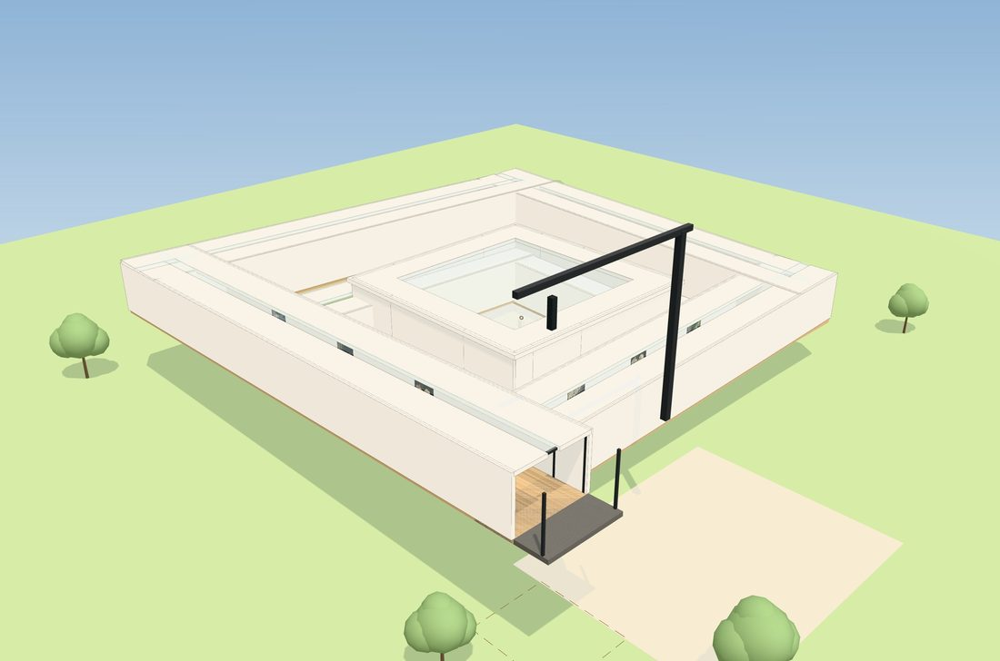
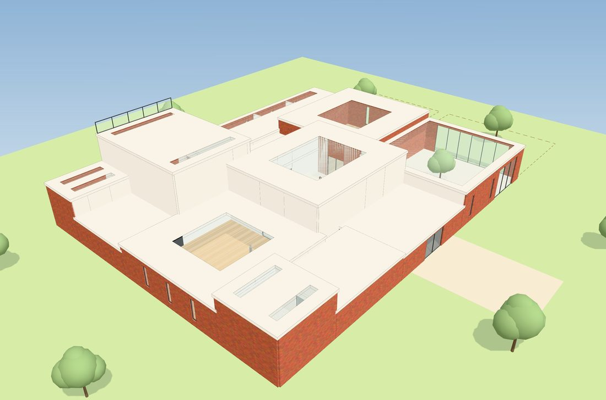
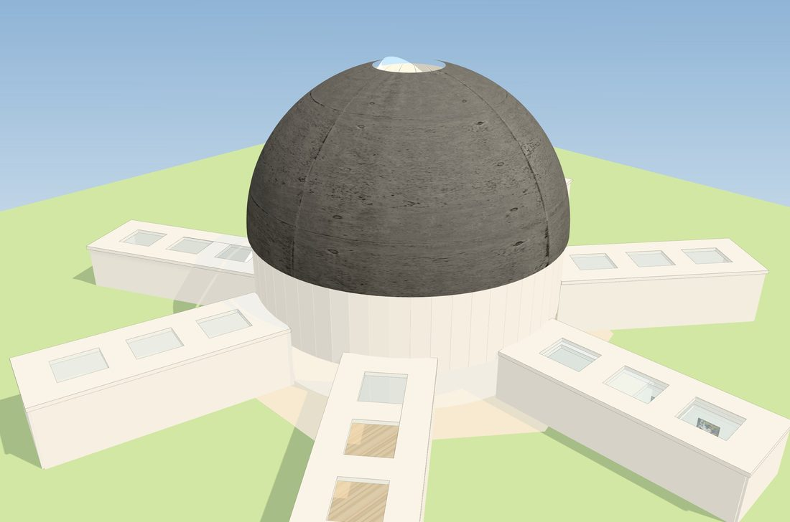
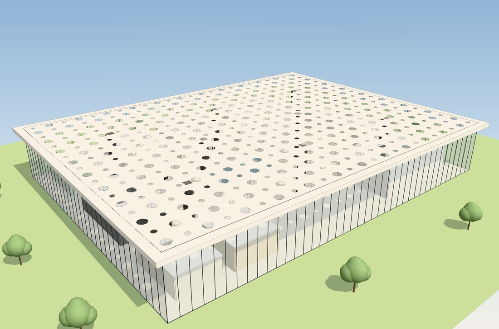
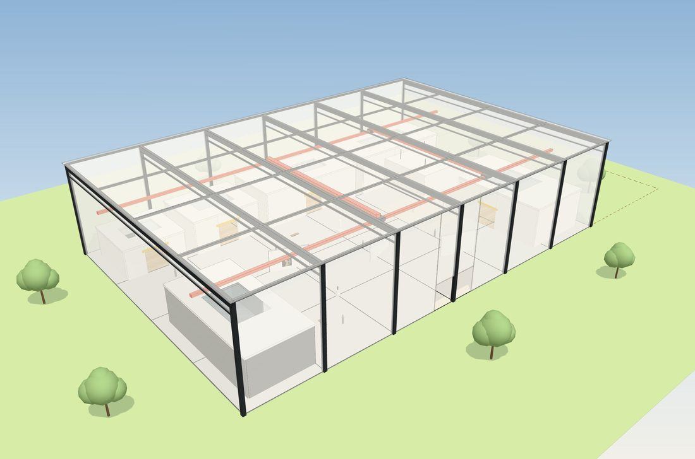
ניווט: המפה הלחיצה ורשימת התערוכות
בכל חמשת הרעיונות המפה שבפינה הימנית העליונה נפתחת לתוכנית גדולה של הבניין (בדיוק כמו התוכניות שבפרקים), ולצידה רשימת כל התערוכות והמדורים. לחיצה על שם, או על חדר בתוכנית, מקפיצה את המבקר לפני התערוכה ופניו אליה. בטלפון זו לא תוספת אלא חלק מהתכנון: ההליכה לוקחת זמן (בקשתך מ־16.11). הכנו כבר מבנה נתונים לכך (spec.directory, בקובץ WIP-one-building-notes.md). בקליפה אפויה (מסלול B) אפשר להחליף את התוכנית בחתך תלת־ממדי של הבניין ("בית בובות"), בלי עבודה נוספת מעבר לקליפה עצמה (הערכה, מחקר 04).
הספירלה הצומחת The Growing Spiral
גלריה אחת שמתפתלת סביב אולם מרכזי, ונוספת לה פיתול חדש בכל תערוכה
על מה זה נשען: לה קורבוזיה, "מוזיאון הגדילה האינסופית" (1931): מוזיאון שמתפתל כמו קונכייה ונוסף לו חלל כשהצורך והכסף מגיעים (נבדק, מעולם לא נבנה כך). ספריית סיאטל (OMA, 2004): ספרים על ספירלה בשיפוע של 2 מעלות לכל היותר, כדי שהסדר לא יישבר (נבדק). Kimbell (קאהן): סדק אור בראש כל קמרון (נבדק).
הרעיון
בניין אחד, ובו גלריה אחת ארוכה שמתפתלת בריבוע סביב אולם מרכזי מוזג. הגלריה עולה בשיפוע של כ־3.5% (בערך שתי מעלות, שאי אפשר להרגיש) וכל פיתול מרים אותה קצת: אין מדרגות, אין הכרעה. ההליכה בספירלה היא ההליכה בזמן: הכניסה בתחילתה, הרנסנס בפיתול הראשון, והתקופות הבאות אחריו. האולם המרכזי, בגובה 8.8 מ׳ ובאור גג, הוא ליבה פתוחה עם קוליסות, פדסטלים ופסל גיבור, ואל תוכו נפתחים חלונות ארוכים מכל זרוע, כך שבכל נקודה בספירלה אפשר לראות איפה אתה ביחס אליו. בקצה הספירלה השטח פתוח: שלד פלדה חצי בנוי ועגורן. המוזיאון לא נגמר; הוא צומח.
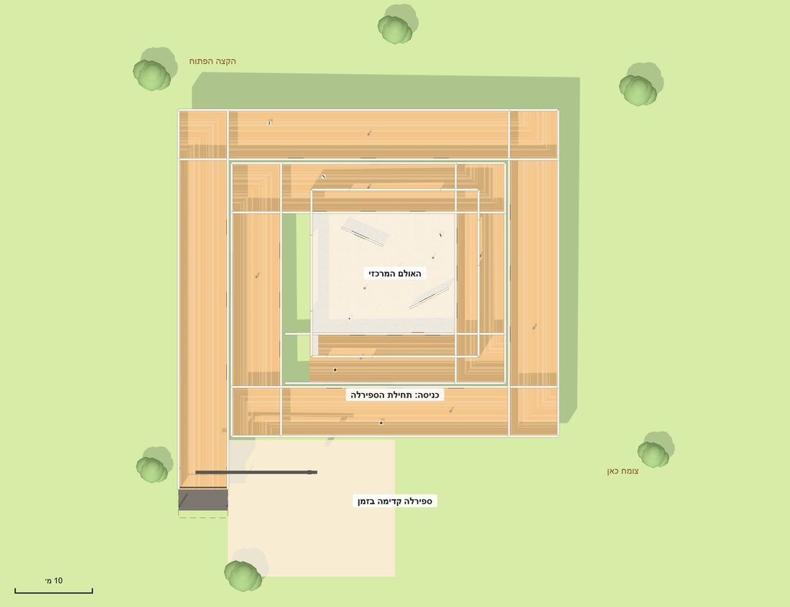
המסלול של המבקר
נוחתים בתחילת הספירלה ומסתכלים לאולם (חלון ארוך מהזרוע הראשונה). הולכים קדימה בזמן: זרוע של 22 עד 44 מ׳, פנייה, זרוע. בכל נקודה הגלריה נראית באורך ובסדק האור שבראשה. אפשר לקפוץ לאולם מהמפה (ברשימה). ההליכה מסתיימת בקצה הפתוח, ושם רואים את התערוכה הבאה "נכנסת".
אור וחתך
סדק אור באורך כל זרוע (רוחב מטר) מעל מרכז הגלריה, עם זכוכית; אור צדדי מחלונות החצר; האולם המרכזי מואר מגג זכוכית. הגג שוקע בשיפוע, ולכן החתך מראה זרועות במפלסים שונים משני צדי האולם.
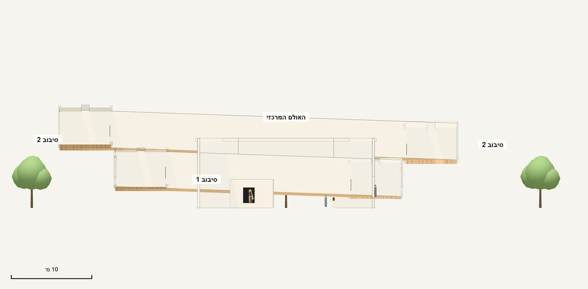
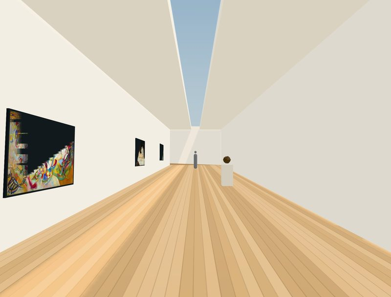
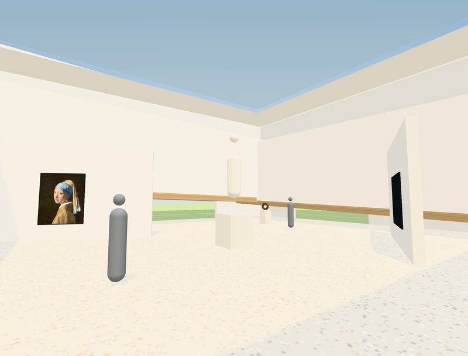
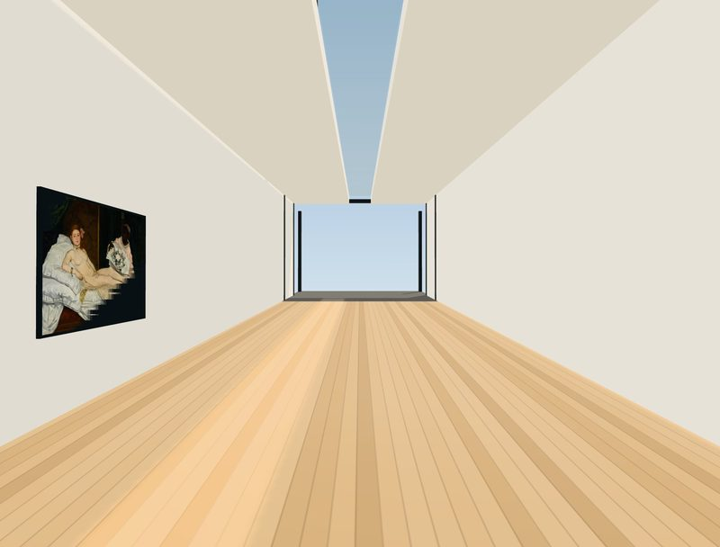
איך זה מחזיק את התוכנית שלך
| תערוכות מתחלפות | כל תערוכה היא קטע של הספירלה (זרוע או חלקה). החלפה = החלפת תליה. תערוכה חדשה גדולה = זרוע חדשה בקצה. |
|---|---|
| מדורי היסטוריה | זו הצורה הטבעית: הספירלה כולה היא קו הזמן. הרנסנס פותח, ובארוק, אימפרסיוניזם וקוביזם נוספים בקצה, בלי לגעת במה שקדם. |
| תערוכות יחיד | "הרחבה" קטנה בצד זרוע: גומחה בעלת פתח, או זרוע קצרה שמסתיימת בה. |
| פסלים ומודלים | באולם המרכזי (הגיבור, הפדסטלים, הקולִיסות) ובנישות בצמתים; מודלי האדריכלות בזרוע אחת. |
| מרחב הליכה פתוח | האולם המרכזי; לא יותר. זו נקודת התורפה: ההליכה בזרועות היא עדיין "מסדרון". |
| גדילה | הכי טבעית מכולם: מוסיפים זרוע בקצה, בלי לגעת בשאר. |
| שמונת הסלוטים | שמונת הסלוטים של ה־Desk הם שמונה זרועות רצופות (או שמונה קטעי קיר). המחשב מחליט את הסדר. |
ריאליזם בטלפון: אילו טכניקות
lightmap אפוי לכל זרוע (פס ארוך אחד, בלי חלקים מסובכים) וארוז כ־KTX2; מסלולי אור בסדק: צל רך על הקיר הנגדי, אפוי; קיר הלבנים או הטיח עם חומר PBR אחד (טיח לבן עם גרגר) ופרקט אלון עם נורמל; מצלמת אור (shaft) חד־פעמית בסדק עם אבק (200 נקודות); החלון לאולם עם זכוכית ו־PMREM של שמיים. בתצוגת עצירה (600 מילישניות ללא תנועה) מפעילים AO ורכות.
נוחות בטלפון
מסלול אחד ובלי החלטות: מתאים לטלפון. הנוף ארוך מאוד (זרוע של 44 מ׳), אבל פשוט: שני קירות וסדק. טעינה: יש לטעון זרוע אחת קדימה ואחת אחורה (סטרימינג), ולא את כל הספירלה.
מה זה עולה אצלנו
הצופה היום יודע רק רצפה אחת. שיפוע של 3.5% דורש "פונקציית גובה" (ארבעה עד שישה ימים, הערכה) ו"תליית עבודות על קיר משופע" (עבודות על משטחים שישרים לאורך השיפוע). לכן: גרסה ראשונה שטוחה לגמרי (4 עד 6 ימים, מסלול S), עם שיפוע אחר כך. מסלול B (קליפה אפויה ב־Blender): 8 עד 12 ימים ועוד 4 עד 6 לגובה (הערכה, סוג 8 בטבלת מחקר 04).
יתרונות
- מסלול אחד, בלי הכרעות: הכי פשוט לטלפון
- הליכה בזמן: זה בדיוק הרעיון של ההיסטוריה
- גדילה אינסופית בלי חדרים נוספים בצד
- אור סדק מרשים, קירות משולבים
- הסיפור: "מוזיאון שצומח" נראה בעין
חסרונות
- מסדרון ארוך עד שמגיעים לאולם; מרחב פתוח מעט
- ריבוע מסודר: סימטרי מאוד אם לא שוברים (אפשר פיתולים בזוויות)
- שיפוע וסטרימינג דורשים עבודה בצופה
- הסוף הפתוח (עגורן) נראה כמו אתר בנייה: צריך עיצוב
בית החדרים The House of Rooms
בלוק לבנים צנוע מבחוץ, ובפנים רצף חדרים שכל אחד שונה, ולוחות תליה שנפתחים
על מה זה נשען: Kolumba (צומתור, קלן): שישה עשר חדרי תערוכה שונים בגודל, בפרופורציה, באור ובמסלול, בלי שלטים ובלי סדר כרונולוגי (נבדק). Kunsthaus Zürich (צ׳יפרפילד): "בית של חדרים" בגדלים משתנים (נבדק). מוזיאון סואן בלונדון: חדר התמונות עם לוחות זזים, שמכפילים את שטח התלייה פי שלושה בערך (נבדק). "בית העלים" (דנילבסקי): בית שפנימו גדול מחוצו (נבדק כרעיון ספרותי).
הרעיון
מבחוץ בלוק לבנים נמוך ושקט, כמו מבנה מוזיאון אמיתי: חלונות סדק, כניסה נמוכה. מבפנים, דירה של שנים־עשר חדרים בגובה ובאור שונים מאוד: כניסה דחוסה (3.2 מ׳), אולם מרכזי גבוה (8 מ׳) עם פנס אור, ארון שחור, חדר צר וגבוה (10 מ׳) עם סדק אור, גלריה ארוכה עם אור צפוני, חדר לבנים, גן חורף. הפתחים אף פעם לא על קו אחד: המסלול מתפתל, והמבקר בוחר. שני חדרים שאפשריים רק דיגיטלית: חדר התמונות של סואן, שבו שלושה לוחות תליה יוצאים מהקיר כמו דפי ספר (לכל לוח שני צדדים, פי שלושה שטח); ו"טלסקופ" בגלריה הארוכה: שלושה פתחים שהולכים וקטנים, שגורמים לגלריה להיראות ארוכה ממה שהיא.
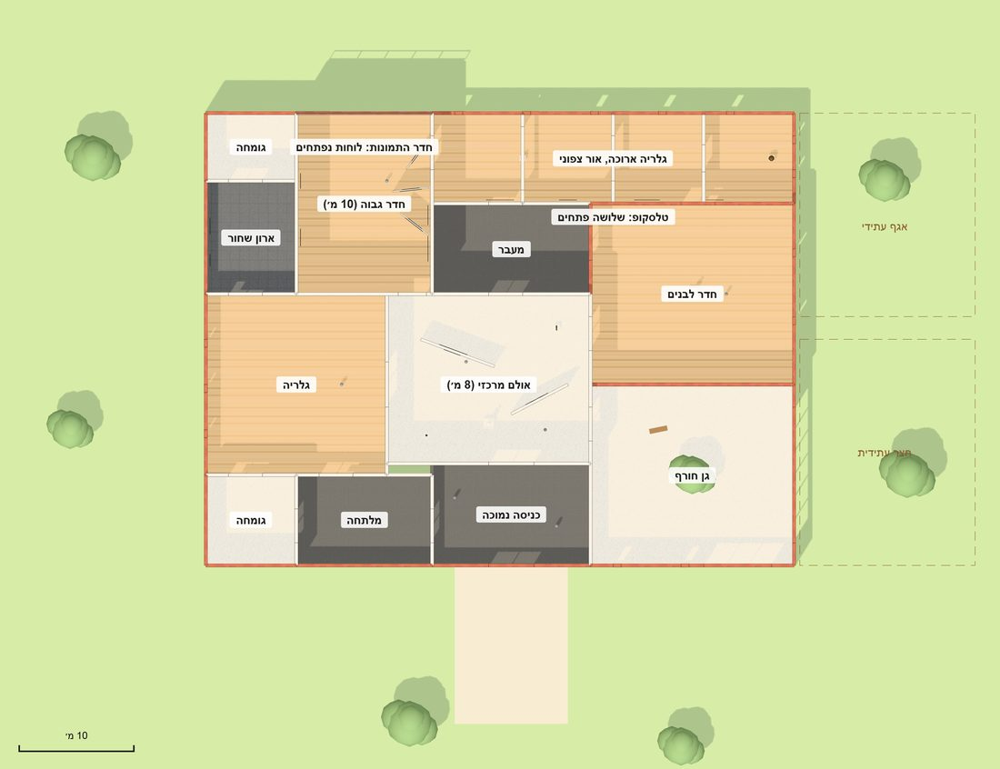
המסלול של המבקר
נכנסים דרך חדר נמוך ורואים אל האולם הגבוה (דחיסה ושחרור). אפשר להמשיך ישר, לרדת לארון השחור, או לעבור לחדר הגבוה ולגלריה הארוכה. אין "שלט" על הדרך: המפה לחיצה והרשימה פותרות את זה. כל תקופה היסטורית מקבלת חדר משלה, בגובה ובאור משלה.
אור וחתך
אור שונה בכל חדר: פנס אור (האולם), שני סדקים (החדר הגבוה), רצועת צפון (הגלריה), זכוכית מלאה (גן החורף), ובלי אור כלל (הארון). החלונות הדקים בחוץ הם הנוף: שם נראים העצים והשמיים שמסתנכרנים עם שעת המבקר.
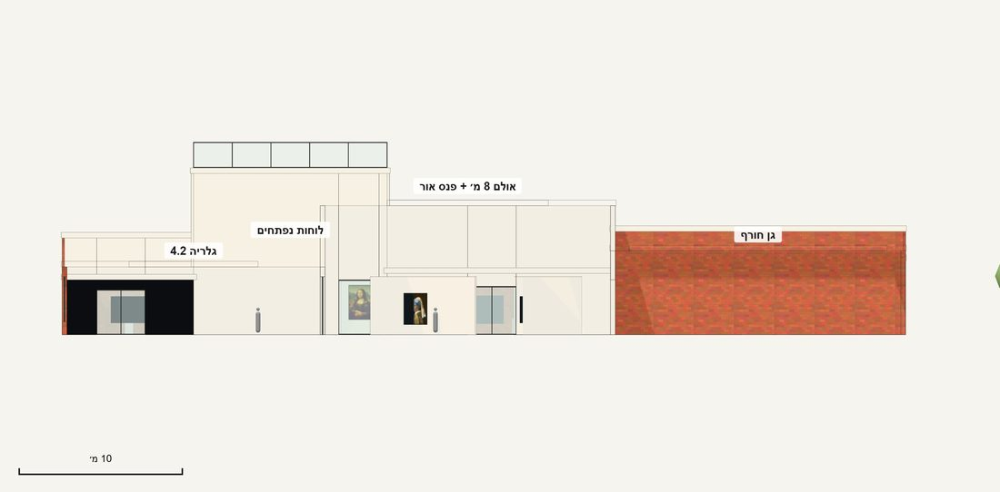
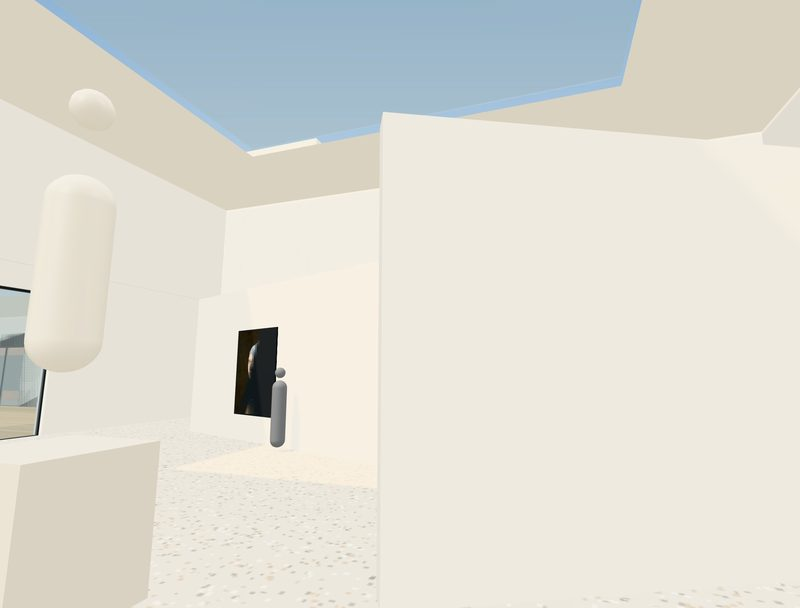
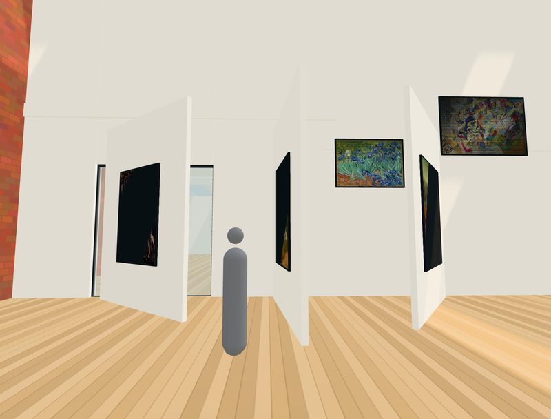
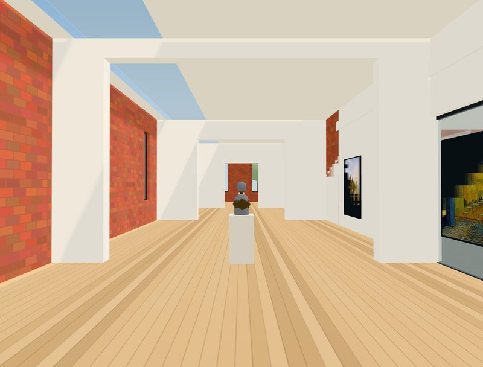
איך זה מחזיק את התוכנית שלך
| תערוכות מתחלפות | חדר אחד; החדר עצמו משנה אופי כשהתערוכה מתחלפת (אור וחומר מוגדרים בנתונים). |
|---|---|
| מדורי היסטוריה | כל תקופה בחדר משלה; הרנסנס נפרס בגלריה הארוכה ("הטלסקופ") ומתרחב בחדר הגבוה (10 מ׳) עם לוחות סואן. |
| תערוכות יחיד | הארון השחור או הגומחה: בדיוק בשביל זה. |
| פסלים ומודלים | האולם המרכזי; חדר שקט אחד למודלי האדריכלות (שולחנות). |
| מרחב הליכה פתוח | המעבר, האולם וגן החורף: פחות "רחוב", יותר ליבה. |
| גדילה | אגף וחצר עתידיים בצד המזרחי; הבלוק עצמו קבוע. |
| שמונת הסלוטים | שמונת הסלוטים הם שמונה מהחדרים; האולם המרכזי, הארון והגן הם חדרי "ליבה" קבועים. |
ריאליזם בטלפון: אילו טכניקות
לכל חדר lightmap משלו (הבדל האור הוא הכלי המרכזי), חומרי PBR שונים (לבנים, אלון, בטון, צפחה) ו־KTX2; סדקי אור עם צל רך; מראה חלון עם שמיים ו־IBL; לוחות סואן: פאנלים פשוטים ("דפים") עם תנועת פתיחה.
נוחות בטלפון
הפתחים המוסטים חותכים קווי ראייה: מעט חדרים נראים בבת אחת (טוב לביצועים). אבל זה מבוך: חובה מפה לחיצה ורשימה, וצבע או חומר ברור לכל אגף. כל חדר שונה: יותר משטחים וגגות שונים, אבל כל חדר קטן.
מה זה עולה אצלנו
הכי קרוב למה שבנינו (קירות, חלונות, פתחים וגגות קיימים): מסלול S 4 עד 6 ימים (חדרים בגבהים ובגגות שונים). דורש הכללת כללי התליה של ה־Desk (היום 8×6 מ׳) לחדרים בכל גודל (שלושה ימים, הערכה) ו"לוח נפתח" כחפץ חדש עם פתיחה (שלושה עד ארבעה ימים). מסלול B: 8 עד 12 ימים. אין צורך בשינוי בצופה.
יתרונות
- הכי הרבה אופי: כל חדר מרגיש אחר
- לא סימטרי ולא "חדרים זהים"
- מתאים בדיוק למה שכבר בנוי
- לוחות סואן: שלושה כפול שטח תליה, ייחודי לדיגיטלי
- מבוסס על מקורות אמיתיים (Kolumba, סואן)
חסרונות
- מבוך: תלוי במפה, רשימה ושלטים
- כל חדר דורש עיצוב משלו: יותר עבודה לכל תערוכה
- "אין אולם גדול": האולם המרכזי קטן יחסית (18×15 מ׳)
- לבנים אדומות הן אופי חזק: פחות "מוזיאון לבן"
שעון האור The Light Clock
אולם עגול עם כיפה ופתח אחד, ושבע גלריות שמתפצלות ממנו כמו חישורי גלגל
על מה זה נשען: הפנתאון ברומא: פתח עיגולי (אוקולוס) של כ־9.1 מ׳ בכיפה של כ־43.3 מ׳, האור היחיד פרט לדלת, ו"שעון שמש הפוך" שמראה את הזמן באור ולא בצל (נבדק). קנוטף לניוטון של בולה (1784, לא נבנה): כדור בגובה של 150 מ׳, חורים בכיפה שנראים ביום ככוכבים (נבדק). סאלין רויאל של לדו: חצי עיגול של בניינים סביב נקודה אחת (נבדק). Chichu של אנדו: אור שמשנה את היצירות לאורך היום (נבדק).
הרעיון
אולם עגול (קוטר 34 מ׳, קירות בגובה 13 מ׳) עם כיפה מכוסה תבניות (coffers) ופתח עגול אחד בראשה. השמש היא הארכיטקטורה: כתם האור שנכנס מהפתח נע על הרצפה ועל הקירות לפי שעת המבקר, ומדליק בכל שעה גלריה אחרת. שבע גלריות מתפצלות מהאולם כמו חישורים (כל אחת 8.5 מ׳ רוחב ו־24 מ׳ אורך), ובכל אחת פנסי גג משלה. בלילה הכיפה הופכת לשמיים של חורי סיכה (בולה), והפדסטלים מוארים בפנסים קטנים, והאולם מואר בירח. הפסל הגיבור (דוד) עומד במרכז, מתחת לפתח.
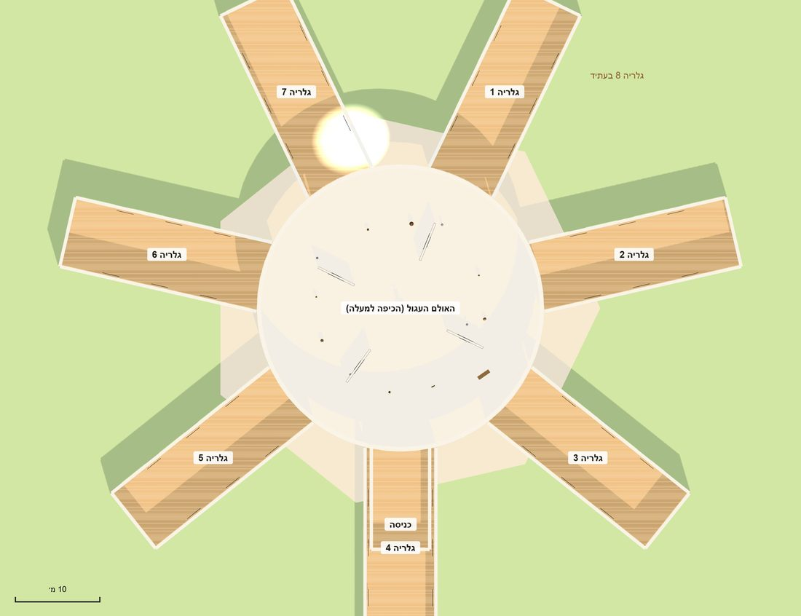
המסלול של המבקר
נוחתים במבוא קצר ופוגשים את האולם מיד: כיפה גבוהה, כתם אור, פסל במרכז. מהאולם יוצאים לאחת משבע הגלריות לפי הצבע והכתם: האור מראה לך איפה להמשיך. הרנסנס בגלריה אחת שמתרחבת, בארוק בשנייה... כל גלריה היא תקופה.
אור וחתך
מקור האור היחיד באולם הוא הפתח. אורך הקרן וזווית הכתם נקבעים לפי שעת היום (גובה השמש ומיקומה), והלילה מציג כוכבים דרך חורים בכיפה. הגלריות מקבלות אור גג משלהן, אפוי. החלון (הפתח) הוא גם הנוף: שמיים אמיתיים ועננים לפי השעה.
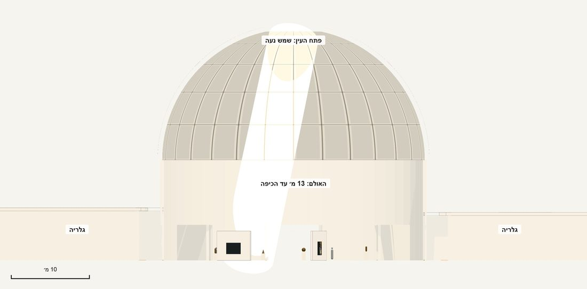
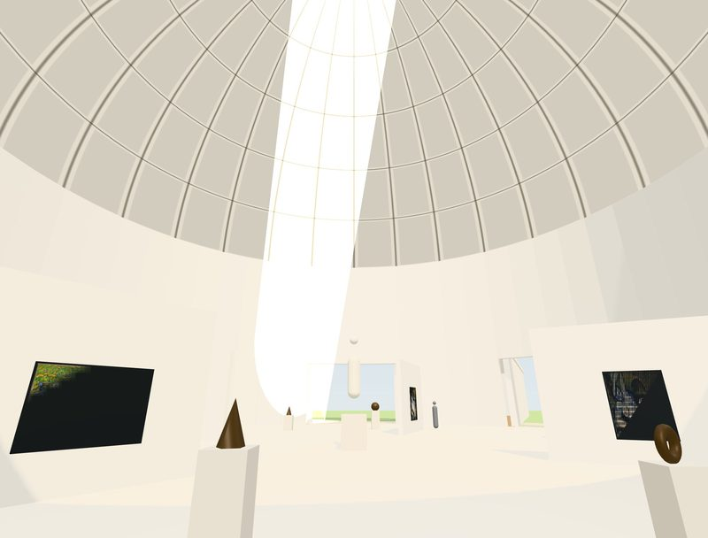
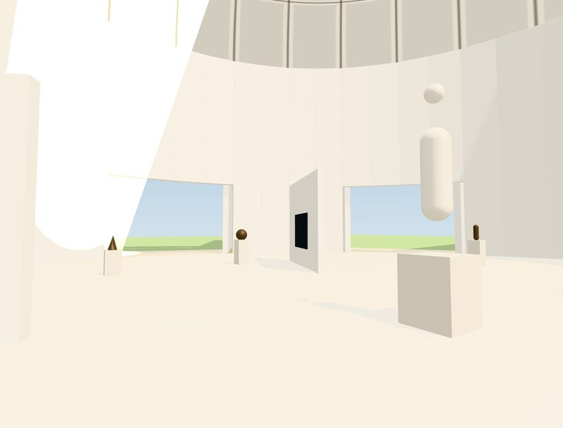
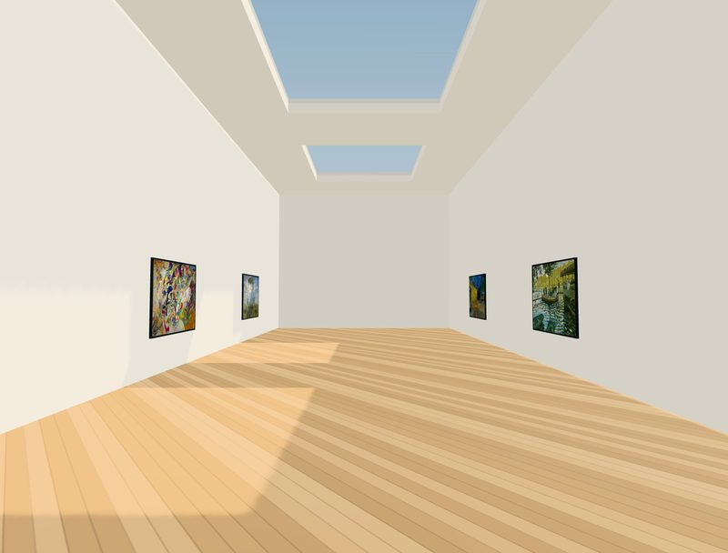
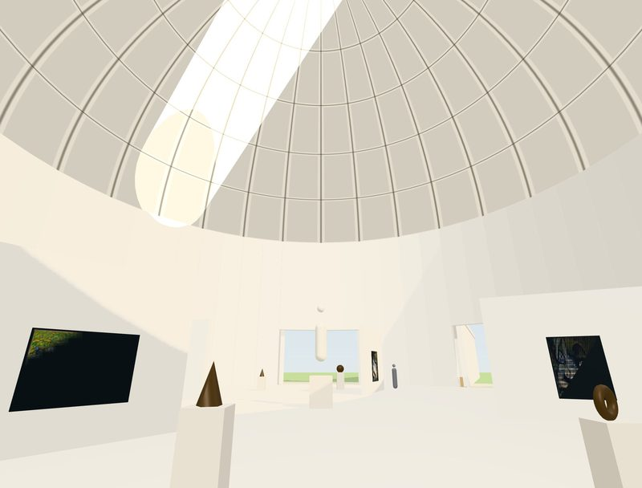
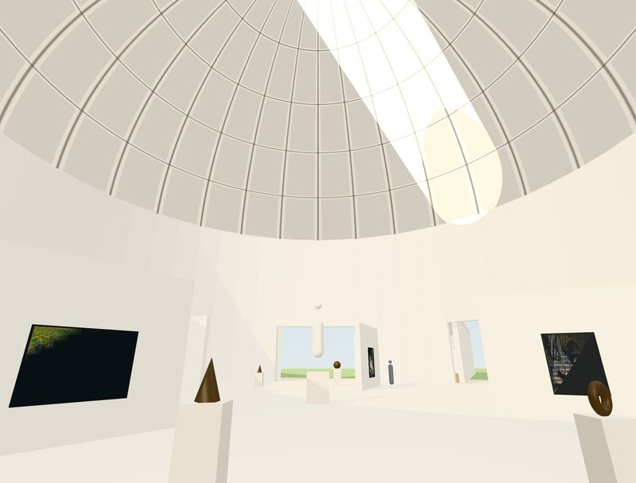
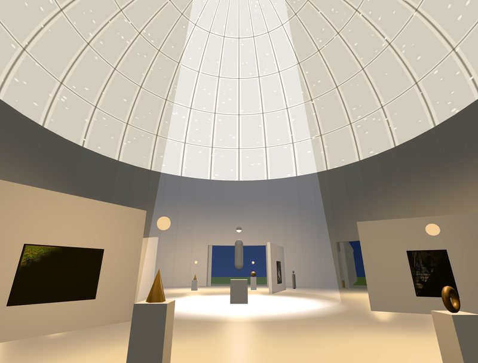
איך זה מחזיק את התוכנית שלך
| תערוכות מתחלפות | גלריה אחת; שבע גלריות פלוס אחת עתידית. |
|---|---|
| מדורי היסטוריה | גלריה לתקופה, בסדר השעון: הרנסנס בבוקר, האימפרסיוניזם בצהריים, הקוביזם בערב (אפשר לתרגם לסדר ההליכה). |
| תערוכות יחיד | גלריה אחת שלמה, או חצי; הכתם עובר בה בשעה קבועה ("שעת התערוכה"). |
| פסלים ומודלים | במרכז האולם (הגיבור), על טבעת פדסטלים סביב; מודלי האדריכלות בגלריה ייחודית. |
| מרחב הליכה פתוח | האולם העגול: גדול, ריק יחסית, ובו קוליסות שמכוונות לרדיוס. |
| גדילה | גלריה שמינית על חישור נוסף; או טבעת חיצונית. |
| שמונת הסלוטים | שבע גלריות פלוס אחת הם שמונת הסלוטים; האולם העגול הוא קבוע. |
ריאליזם בטלפון: אילו טכניקות
שלושה עד חמישה מצבי lightmap אפויים (בוקר, צהריים, אחר הצהריים, ערב, לילה) והחלפה לפי שעון המבקר (תכונת וואו 1 במחקר 04); כתם האור כקשת: מסכה אחת של הפתח; קרן אור (shaft) כמשולש חצי־שקוף עם אבק; PBR של שיש וטיח; IBL של שמיים; כוכבי הלילה כטקסטורה עם נקודות. כיוון הכתם נקבע לפי אותו חישוב שמש כמו בשמיים של החוץ.
נוחות בטלפון
הכי הרבה השפעה לכל יום עבודה (מחקר 04). אולם עגול דורש גיאומטריה מעוגלת (במחקר: בבלנדר עובד בקלות, ב־synth.js קשה: רק מלבנים). האולם עצמו פשוט (קירות וכיפה) והנוף הגדול נראה כולו. מספיק שלוש עד חמש "מצבי אור" אפויים.
מה זה עולה אצלנו
סוג 2 (רוטונדה) במחקר: מסלול B 7 עד 10 ימים, ועוד שלושה עד חמישה מצבי אפייה וקשר לשעון. מסלול S לא מתאים (עיגולים). אין שינוי בצופה. הערכה גסה (שיפוט).
יתרונות
- הרעיון הכי זכיר: בניין שמספר את הזמן
- אור אמיתי (שמש נעה), לא טקסטורה
- הכי הרבה השפעה לכל יום עבודה (לפי מחקר 04)
- פסל גיבור במרכז, בדיוק כמו שביקשת
- לילה מיוחד, עם כוכבים
חסרונות
- סימטרי ומרוכז: זה בדיוק מה שאמר "מסודר מדי" (אפשר לשבור: גלריות באורכים וזוויות שונים)
- מספר מצבי אפייה (כל אחד אפוי בנפרד)
- גלריות רדיאליות: חוזרות על עצמן אם לא מעצבים כל אחת
- אולם עגול דורש שינוי טכני בבנייה (בלנדר)
תחת שמיים אחד Under One Sky
גג אחד ענק ומחורר, ומתחתיו עיירה קטנה של גלריות
על מה זה נשען: Louvre Abu Dhabi (נובל): כיפה "מרחפת" של 7,850 כוכבי אלומיניום שמסננת שמש על 55 בניינים (23 מהם גלריות) בין בריכות, והוא מארגן את המוזיאון כרצף כרונולוגי חוצה גיאוגרפיות (נבדק). Kimbell: אור כדמות ראשית (נבדק). Menil: כפר של בתים נמוכים (נבדק).
הרעיון
בניין אחד: גג לבן עצום (96×72 מ׳, בגובה 14 מ׳) על שמונה עמודים, מחורר בשדה של פתחים בצורת כוכב, וקליפת זכוכית סביבו. מתחתיו עיירה: בתים בגדלים ובגבהים שונים (ארבעה בתים של הרנסנס שהולכים וגדלים, בתי יחיד, בית אימפרסיוניזם, אולם לפסלים ולמודלים), רחובות ביניהם, וכיכר מרכזית עם בריכה, קוליסות בזוויות, פדסטלים ופסל. הגג זורק על הרצפה ועל הבתים תבנית אור שנעה עם השמש: המרחב הפתוח הוא החדר הכי יפה במוזיאון. כל תערוכה היא בית, וכל בית מחובר בפתח לרחוב.
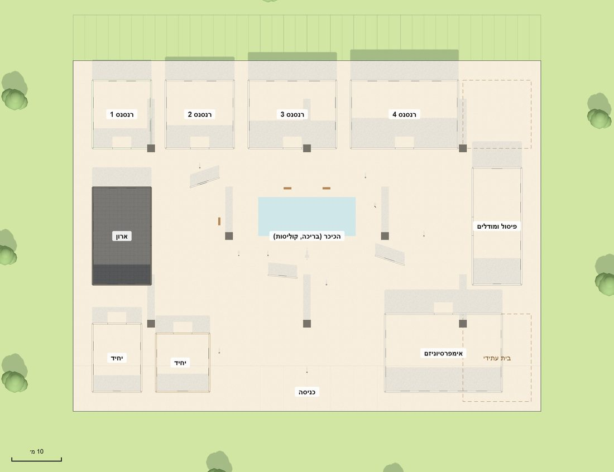
המסלול של המבקר
נכנסים דרך הזכוכית אל הכיכר ורואים הכול: הגג, הבריכה, הפסל, ובתים מכל הצדדים. בוחרים בית, או הולכים ברחוב הרנסנס שהבתים בו גדלים. כל רחוב וכל כיכר הם הליכה פתוחה בין התערוכות.
אור וחתך
שדה של 400 פתחי כוכב בגג (שני גדלים לסירוגין) מעביר אור שמש בנקודות, ובצל. האור משתנה עם השעה: בבוקר הנקודות חדות וארוכות, בצהריים קצרות, בערב כתומות. הבתים מקבלים את האור הזה ממעל וגם פנס אור משלהם. קליפת הזכוכית היא החלון: כל הנוף החיצוני (שמיים, עצים) נראה מבפנים.
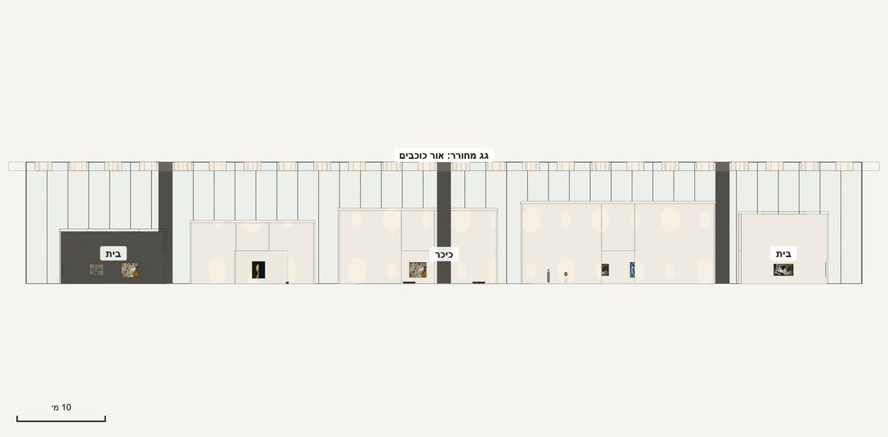
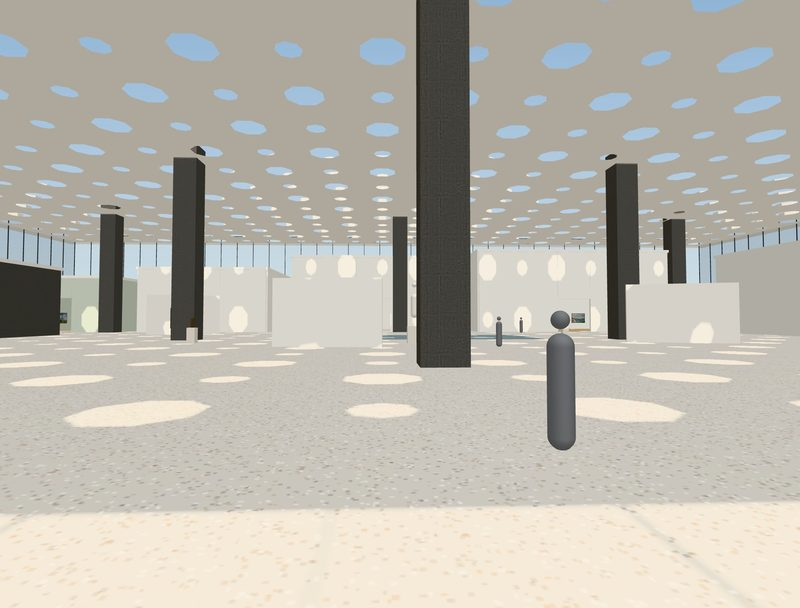
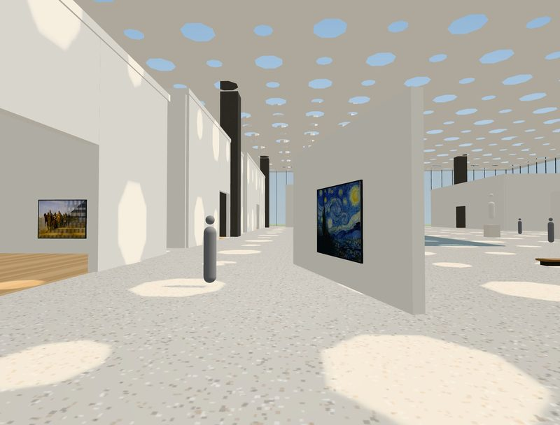
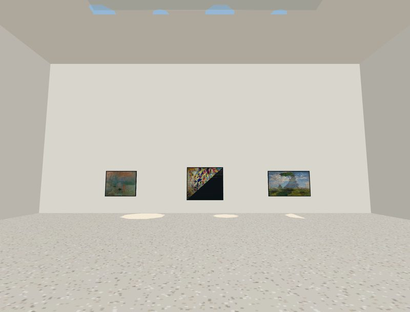
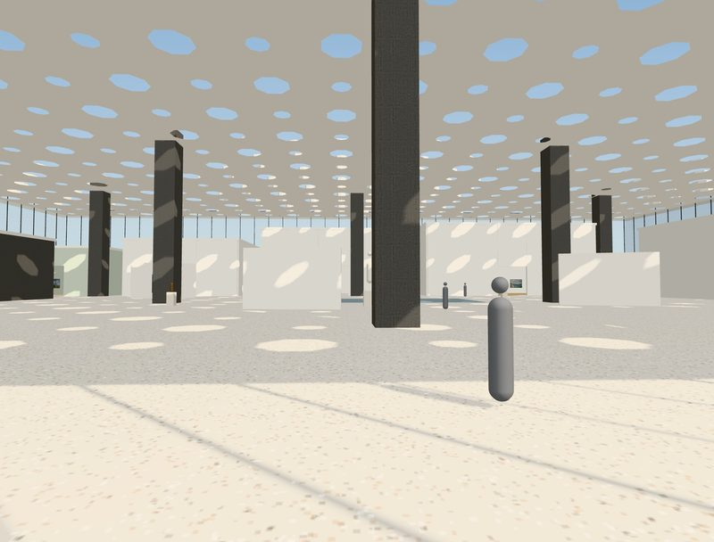
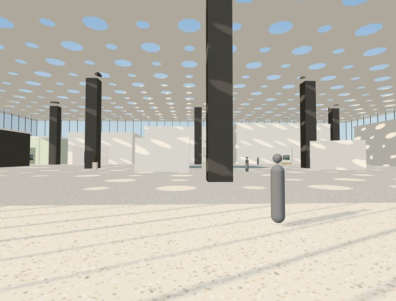
איך זה מחזיק את התוכנית שלך
| תערוכות מתחלפות | בית: מתחלף על קרקע בלי לגעת במבנה; כשתערוכה נגמרת, בית נעלם והמקום נשאר רחבה. |
|---|---|
| מדורי היסטוריה | רחוב של בתים: הרנסנס נפרס בארבעה בתים שהולכים וגדלים; אימפרסיוניזם בבית גדול יותר. |
| תערוכות יחיד | בית קטן בקצה הרחוב. |
| פסלים ומודלים | בכיכר ובאולם בצד המזרחי; דגמים בבית שלהם. |
| מרחב הליכה פתוח | זה העיקר: כיכר, רחובות, בריכה, ספסלים. |
| גדילה | בית חדש בכל מקום פנוי; או הרחבת הגג בפרק נוסף. |
| שמונת הסלוטים | שמונת הסלוטים הם שמונה בתים (כמו היום), ובתים נוספים לתערוכות ההיסטוריה. |
ריאליזם בטלפון: אילו טכניקות
לכל שעה lightmap אפוי של הרצפה (תבנית הכוכבים): תכונת וואו 1 של מחקר 04, ללא אור בזמן אמת; הבריכה עם החזרים של שמיים (IBL); הגג עם חומר בטון PBR; רצפת טרצו עם גרגר; אבק באור; בתים עם lightmap משלהם; מראה זכוכית לחזית.
נוחות בטלפון
הכי קרוב לאשכול שכבר בנוי: אותם בתים (8×6 מ׳) אך מתחת לגג. הגג נאפה פעם אחת (הצללה), והרצפה מקבלת תבנית אור אפויה לכל שעה. שמונה עד עשרה בתים נראים בבת אחת, ולכן חיתוך לפי תא (portal) חשוב.
מה זה עולה אצלנו
הבתים כבר קיימים. חדש: קליפה (רצפה, גג, עמודים, זכוכית): מסלול S 5 עד 7 ימים; אפיית הצללה מתבנית הגג: 3 עד 4 ימים; חיתוך לפי תא וסטרימינג: 4 עד 5 ימים (השקעה 8 במחקר). מסלול B: 8 עד 12 ימים. אין שינוי בצופה. זה המעבר הזול ביותר מהאשכול. (הערכות שיפוט.)
יתרונות
- הכי קרוב למה שבנינו (בתים ורחובות), ועכשיו בתוך בניין
- מרחב פתוח אמיתי בין התערוכות, בלי להיראות "בפארק"
- הכי יפה: תבנית אור נעה על הרצפה
- לא סימטרי: עיירה
- גדילה טבעית: בית חדש
חסרונות
- נראה כמו "בתים בתוך אולם": צריך מראה של בניין אחד (הקליפה)
- עומס ציור: הרבה בתים בבת אחת
- ללא אור שמש, הגג פחות מרשים: הלילה צריך עיצוב נפרד
- גג מחורר בגודל 96×72: הרבה משטחים ואפייה כבדה
המסגרת שמחברים אליה The Plug-in Frame
אולם פלדה אחד, ומודולי תערוכה שנכנסים ויוצאים בעגורן
על מה זה נשען: Fun Palace (סדריק פרייס וג׳ואן ליטלווד, 1961): מבנה גמיש אחד לקהילה, שלא נבנה (נבדק). Plug-in City (ארצ׳יגרם, 1964): בניינים שאפשר לחבר ולהחליף (נבדק); ההשפעה על פומפידו נרשמה בעמוד ארצ׳יגרם (נבדק). Tate Modern: אולם הטורבינות הגדול כחלל ציבורי למיצבים מתחלפים (נבדק).
הרעיון
אולם פלדה אחד (72×48 מ׳, בגובה 16 מ׳) עם מסבכים חשופים, קליפה שקופה למחצה, ושני עגורני גשר. על רצפה ברשת של 12 מ׳ עומדות קופסאות לבנות: תערוכות. כשתערוכה נגמרת, העגורן מרים את הקופסה והוא מביא אחרת. התאים הריקים הם המרחב הפתוח: כיכרות עם קוליסות, פדסטלים וספסלים. ההיסטוריה היא רכבת של קופסאות שגדלות (12, 12, 24, 24 מ׳; גובה 5 עד 7.4 מ׳). בדיגיטלי, פרסום ב־Desk הוא עגורן שמביא את התערוכה ללילה, ואפשר לראות אותו.
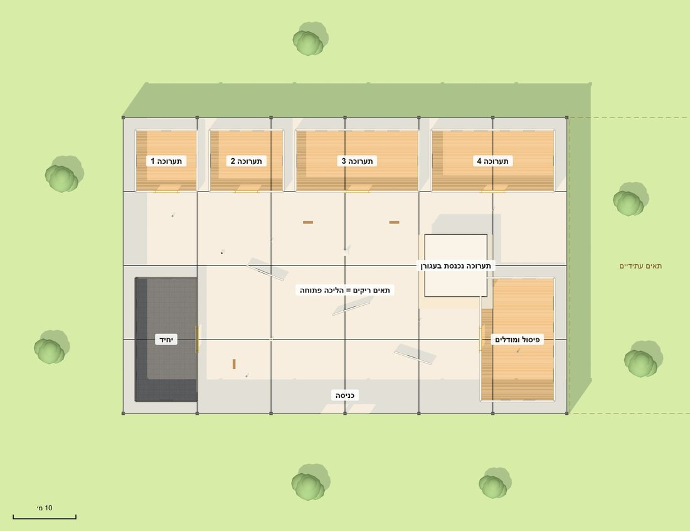
המסלול של המבקר
נכנסים לאולם עצום: מסבכים, עגורן אדום, קופסאות לבנות, ובאחת מהן תערוכה שתלויה באוויר ומתחילה לרדת. בין הקופסאות רחבות ופתוחות, ונוף מבעד לקליפה השקופה.
אור וחתך
קליפה שקופה למחצה ושני פסי פנסי גג: אור רך ושווה, בלי צללים חדים. הקופסאות עצמן עם פנס אור משלהן. בלילה האולם כולו פנס.
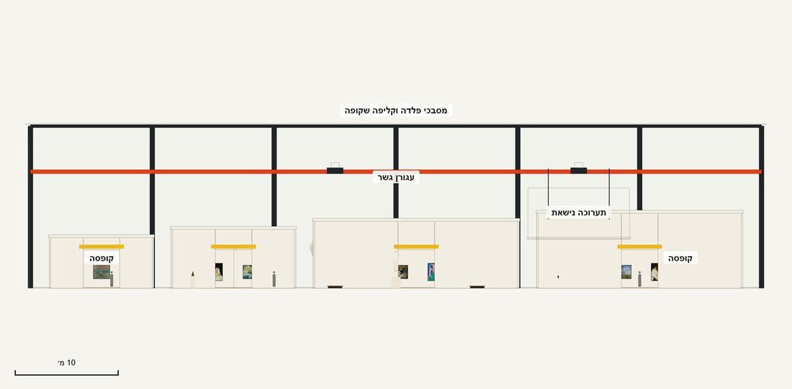
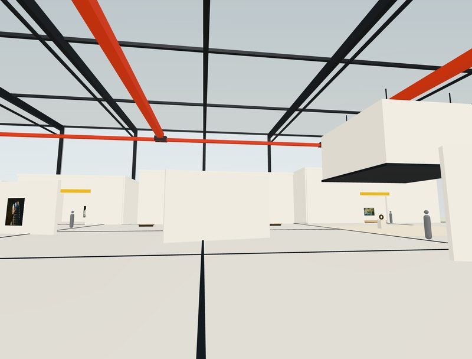
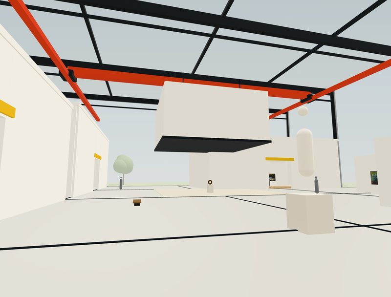
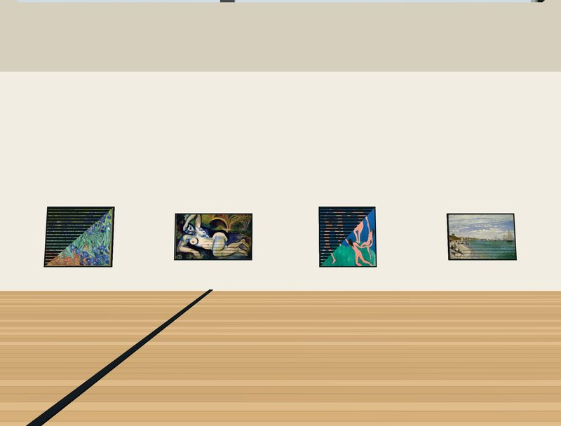
איך זה מחזיק את התוכנית שלך
| תערוכות מתחלפות | זה העיקר: תערוכה = קופסה; הוצאה והכנסה בעגורן, בקלות. |
|---|---|
| מדורי היסטוריה | רכבת של קופסאות בקו אחד, שגדלות ככל שהתקופה חדשה יותר. |
| תערוכות יחיד | קופסה ארוכה וצרה (חדר משלה). |
| פסלים ומודלים | באחת הקופסאות: אולם פיסול; ובכיכרות שבין הקופסאות. |
| מרחב הליכה פתוח | התאים הריקים והרחבה הנמוכה: חצי מהאולם. |
| גדילה | שני תאים בקצה: הרחבת הרשת. |
| שמונת הסלוטים | שמונה קופסאות בשמונה תאים; בשאר התאים הליכה חופשית. |
ריאליזם בטלפון: אילו טכניקות
קופסאות עם lightmap פשוט (פנים לבן); האולם עצמו נאפה כצל אחד; קליפה שקופה: פלייט אחד עם opacity; מסבכים כגיאומטריה אחת ממוזגת; עגורן: אנימציה של קופסה בשרשרת; PBR של פלדה ובטון.
נוחות בטלפון
הקופסאות פשוטות וחוזרות (instancing), והאולם עצמו כמעט חלול: זול. הקליפה השקופה: שקיפות יקרה בעיבוד, אבל אפשר לדמות אותה במרקם אחד. נראה עד שתי קופסאות מבפנים.
מה זה עולה אצלנו
הצורות הפשוטות ביותר: מסלול S 5 עד 7 ימים (אולם, רשת, קופסאות, שני עגורנים), ועוד 3 עד 4 ימים לאנימציית ההכנסה והוצאה (אירוע פרסום ב־Desk). אין שינוי בצופה. מסלול B: 9 עד 12 ימים. (הערכות שיפוט.)
יתרונות
- הכי מתאים לתערוכות מתחלפות: זה הרעיון
- אנימציית עגורן: וואו ייחודי לדיגיטלי
- אולם גדול ופתוח, הרבה מרחב בין התערוכות
- זול לבנייה
- גדילה: הרחבת הרשת
חסרונות
- נראה כמו תערוכת סחר או מחסן: פחות "מוזיאון לאמנות"
- הקופסאות עצמן לבנות וזהות: פחות אופי
- הקליפה השקופה פחות "בניין עם קירות וגג" (אבל יש גג)
- אין ארכיטקטורה לאמנות ההיסטורית: היא רק בקופסאות
השוואה
| 1 ספירלה צומחת | 2 בית החדרים | 3 שעון האור | 4 תחת שמיים אחד | 5 מסגרת מחברת | |
|---|---|---|---|---|---|
| בניין אחד עם קירות וגג | כן | כן | כן | כן (גג אחד על הכול) | כן (קליפה שקופה) |
| אולם מרכזי עם קוליסות ופדסטלים | כן | כן | כן, הכי חזק | כן (כיכר) | כן (תאים ריקים) |
| לא סימטרי ולא "חדרים" | בינוני: ריבוע | כן | לא: רדיאלי | כן: עיירה | בינוני: רשת |
| מרחב פתוח בין התערוכות | חלקי (האולם) | חלקי | האולם בלבד | הכי חזק | חזק |
| תערוכות שמתחלפות לאורך זמן | טוב (זרוע) | טוב (חדר) | טוב (גלריה) | טוב (בית) | הכי טוב (קופסה בעגורן) |
| היסטוריה שמתרחבת בהליכה | הכי טבעי | טוב (טלסקופ) | טוב (גלריה לתקופה) | טוב (רחוב בתים) | טוב (רכבת קופסאות) |
| אור יום מחלונות ומגג, לפי שעה | סדק + חלונות | חדר לכל אור | שמש נעה: הכי חזק | כתמי אור נעים | קליפה שקופה |
| נוחות וביצועים בטלפון | טובה (סטרימינג) | טובה (חדרים קטנים) | טובה | טובה (חיתוך) | טובה מאוד |
| אופי ואווירה ("מיוחד") | גבוהה | גבוהה מאוד | הכי גבוהה | גבוהה | בינונית |
| מאמץ ראשון (ימי עבודה, הערכה) | 4 עד 6 (שטוח) / 12 עד 18 | 4 עד 6 + 6 (S) | 7 עד 10 (B) | 5 עד 7 (S) + אפייה | 5 עד 7 + 3 עד 4 |
| שינוי בצופה | גובה רצפה (בהמשך) | אין | אין (גיאומטריה עגולה) | אין | אין |
המלצה
להתחיל ברעיון 4, "תחת שמיים אחד", ולהשאיל מהאחרים. הוא עונה על הכי הרבה ממה שאמרת: בניין אחד עם גג וחלונות, כיכר מרכזית עם קוליסות ופדסטלים ופסל, מרחב פתוח אמיתי בין התערוכות (רחובות, כיכר, בריכה), לא סימטרי (עיירה), והיסטוריה בצורת רחוב של בתים שהולכים וגדלים. היתרון הגדול: הבתים כבר בנויים (אותם חדרים של ה־Desk), והמעבר מהאשכול הוא רק קליפה עליהם: זה הכי זול והכי בטוח. התבנית של אור הגג על הרצפה, ושעת היום שמזיזה אותה, הם המקום שבו המבנה יראה "אמיתי".
- השאלה שנשארת: ש"בתים בתוך אולם" יקרא כבניין אחד ולא כמחסן עם בתים. התשובה: קליפת זכוכית עדינה, עמודים צפופים, גג בעל חומר בטון אמיתי, ופרטי כניסה בולטים. זה נבדק בתמונות הרנדר, אבל לא על אייפון.
- מה להשאיל: מרעיון 2 ("בית החדרים"): גבהי תקרה ואור שונים בין הבתים, "הטלסקופ" ברנסנס ולוחות סואן בבית אחד; מרעיון 3: כתם אור נע בכיכר (פתח אחד בגג) כ"שעון"; מרעיון 1: הרנסנס כרחוב שהולך וגדל לכיוון אחד, וגדילה בקצה.
- שלבים: (א) קליפה בלבד מעל האשכול הקיים, עם גג מחורר ושעה (5 עד 7 ימים, הערכה); (ב) אפיית אור לשלוש שעות; (ג) הבית הראשון בחומרים אמיתיים (מסלול B); (ד) מפה לחיצה ורשימה (התוכנית שמורה ב־WIP-one-building-notes.md); (ה) רחוב רנסנס נוסף.
- המקום השני: רעיון 2 ("בית החדרים"), אם רוצים אופי חזק ופחות "מבנה גדול". הכי "וואו": רעיון 3, אם מוכנים לבנות אולם עגול (מסלול B).
נספח א׳: שש הסקיצות הראשונות
לפני חמשת הרעיונות נבנו שש סקיצות ראשונות, כחומר גלם. הנה מה שקרה לכל אחת.
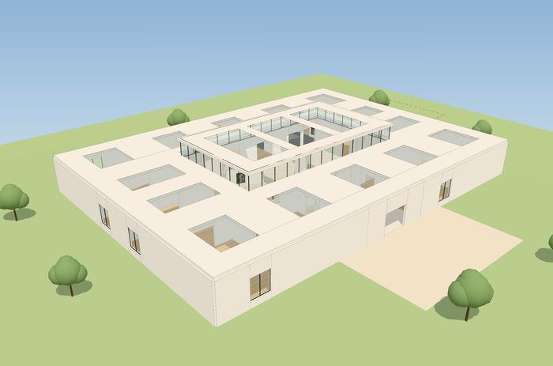
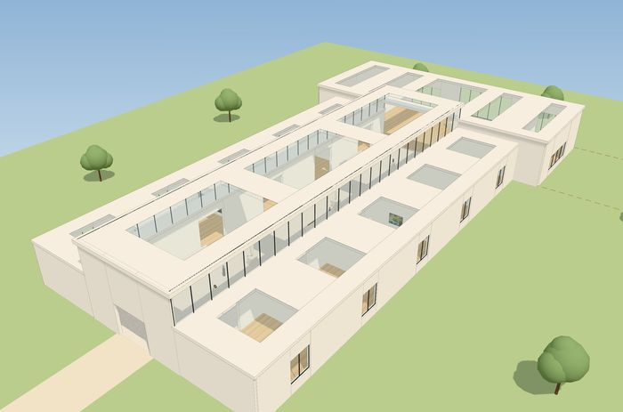
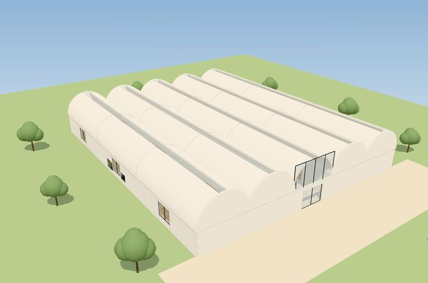
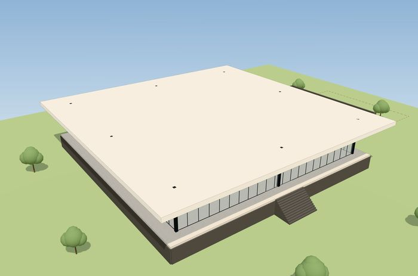
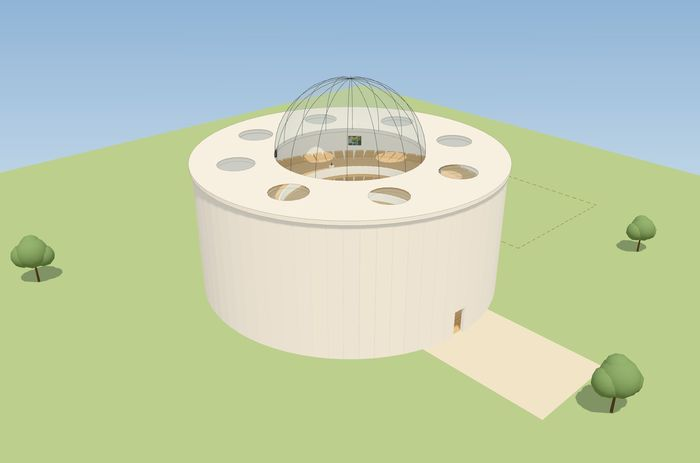
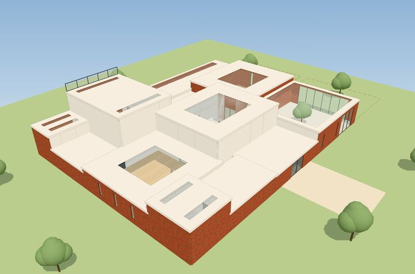
נספח ב׳: מה אומת ומה לא
- הבניינים בתמונות הם מודלי סקיצה: המידות והחומרים להמחשה. האור בתמונות הוא תאורת שמש עם צל (לא אפיית מוזיאון).
- עובדות על מוזיאונים אמיתיים הן מהמחקר שנכתב היום (
research/), שבו כל טענה מסומנת כנבדקה או לא. מה שלא נבדק מסומן. - הערכות הימים הן שיפוט של המחקר ושלי, לא מדידה. ביצועי טלפון לא נמדדו על אייפון אמיתי באף גרסה.
- רשיון דוד (CC BY-SA) טרם אושר על ידך. דגמי האדריכלות באגף הרנסנס שלנו הם פשוטים שבנינו, כי לא נמצא מודל חופשי.
- קובץ המקור של המחקר, הדגמים והמסמך:
studio/design/museum-directions/.